급식실에서 복서팬츠 입은 휘핏 Candy가 주스에 미끄러지자 갑옷 입은 새끼고양이가 한 발로 트레이를 받아내고, 이후 흑백 비트 몽타주로 어디서나 Candy 곁을 지키는 모습을 보여주는 22.5초 AI 숏폼
| 화면 비율/해상도 | 9:16 · 1080x1920 · 30fps |
|---|---|
| 화면 방향 트릭 | 없음 (90도 회전 없음). 대신 9번·11번은 천장을 수직으로 올려다보는 웜즈아이 POV, 7번은 바닥 10cm 높이 인서트로 시점 대비를 줌 |
| 워터마크 | 좌상단: 라임그린 박스에 검정 'HIGGSFIELD' + 아래 흰색 'GENJUTSU'(x1~21%, y1~4%, 불투명 100%). 우상단: 흰색 'SICKMANAI' 고양이귀 로고(x86~99%, y1~4%, 불투명 100%, 흰 배경에선 안 보이는 것처럼 느껴짐). 두 로고 모두 흑백 구간에서도 컬러 유지 → 그레이드 후 오버레이한 것 |
| 화면 문구/자막 | 자막/문구 없음. 화면 속 글자는 휘핏 반바지의 'CANDY' 로고뿐 (캡션: 'saved candy with my cat senses😹 made with @higgsfield.ai Genjetsu') |
| 원본 캡션 | saved candy with my cat senses😹 made with @higgsfield.ai Genjetsu |
0~0.3s 9프레임짜리 초귀여운 갑옷 새끼고양이 정면 얼굴(썸네일 역할) → 0.3s부터 고양이 어깨 너머로 두 발로 걸어오는 'CANDY' 복서팬츠 휘핏. '갑옷 입은 고양이 + 사람처럼 걷는 개'라는 두 개의 이상한 요소를 3초 안에 모두 제시
| Setup 0.00-4.50s | 급식실에서 갑옷 새끼고양이가 트레이를 든 휘핏 Candy를 지켜봄 |
|---|---|
| Inciting 4.50-6.23s | 고양이가 반해서 미소 → 갑자기 '고양이 감각'으로 위험 감지(ECU, 입 벌림) |
| Escalation 6.23-9.30s | Candy가 주황 주스를 밟고 미끄러짐, 트레이·음식이 슬로모션으로 공중에 |
| Climax 9.30-10.80s | 고양이가 한 발로 트레이를 잡고 음식이 하나씩 정확히 제자리에 착지 |
| Payoff 10.80-13.73s | Candy가 고양이를 사랑스럽게 바라봄(고양이는 무표정) — 쉽/케미 완성 |
| Loop 13.73-22.50s | 흑백 '그날 이후' 몽타주: 공원·병실·부엌·복도·사무실·식탁 등 어디서나 곁을 지키는 기사 고양이(평생 경호 추정). 끝 포즈가 첫 프레임 정면 고양이와 이어져 루프 |
'지켜주는 거야 스토킹이야?', 'Candy 반바지 어디서 사요', '고양이 무표정 레전드' 같은 해석형 댓글 유도 — 흑백 몽타주의 의미를 모호하게 둔 것이 핵심(추정)
마지막 컷(흑백, 정면 응시하는 고양이 전신)에서 첫 프레임(컬러 정면 고양이 MCU)로 돌아가면 같은 표정·같은 시선이라 흑백→컬러 '회상 루프'처럼 이어짐. 오디오는 끝에서 페이드아웃돼 0.10s 첫 비트로 자연 재시작
| Teaser flash / cold open | 9프레임 미리보기 플래시 @ 0.00-0.30s |
|---|---|
| Over-the-shoulder + crane-up rack focus | 어깨 너머 크레인업 + 초점 이동 @ 0.30-1.20s |
| Reaction shot cross-cutting | 리액션 교차편집 @ 2.67-5.63s, 7.23-9.30s |
| Foreground wipe | 전경 물체로 가리며 전환 @ 3.63-3.67s, 6.93s |
| Cut-in / punch-in | 같은 축 초접사 컷인 @ 5.63s |
| Insert shot | 바닥 인서트 컷 @ 6.23s |
| Slow motion POV | 천장 수직 POV 슬로모션 @ 7.23s, 8.83s |
| Dolly-in two-shot | 돌리인 투샷 @ 10.5-13.73s |
| Audio drop-out / hard silence | 무음 절벽 @ 13.35-13.73s |
| Beat-synced montage (1 cut per beat) | 1박 1컷 비트 몽타주 @ 13.73-22.50s |
| Monochrome grade | 흑백 그레이드(시간 경과/회상 표시) @ 13.73-22.50s |
[character_sheet_en] MAIN: a tiny 7-week-old fluffy golden-shaded British Longhair kitten (cream-apricot fur with faint darker tabby ticking and an 'M' on the forehead, round flat face, huge round glossy near-black eyes, small pink nose, soft white whiskers, fluffy cheek ruff), a small pale-pink satin bow on its LEFT ear (viewer's right), wearing a polished silver medieval plate armor sized for a kitten: breastplate embossed with a fleur-de-lis and scrollwork, round brass rosette rivets on both shoulders, engraved filigree pauldrons, chainmail sleeves and chainmail skirt, smooth steel vambraces ending at the furry grey-brown paws, a brown leather diagonal belt with brass buckle, a short sword with round pommel on its left hip, and an ivory satin cape/hood draped over the shoulders. Height about the size of a real 7-week kitten (fits on a cafeteria table), behaves deadpan and stoic, stands bipedal in later shots. CO-STAR: 'Candy', an adult whippet with a short thin white coat showing pink skin, a blue-grey patch over its LEFT eye and ear (viewer's right), long narrow snout, black nose, rose ears, standing upright on its hind legs like a person, wearing small black boxing gloves and black Muay Thai boxing shorts with a black waistband and the word 'CANDY' in multicolor bubble letters surrounded by colorful gummy-candy shapes. [wardrobe_props_en] Kitten: silver plate armor with fleur-de-lis breastplate, brass rosette shoulder rivets, chainmail sleeves and skirt, steel vambraces, brown leather diagonal belt with brass buckle, short sword with round pommel on left hip, ivory satin cape/hood, pale-pink satin bow on left ear. Dog: small black boxing gloves, black Muay Thai shorts with multicolor 'CANDY' bubble letters and gummy-candy shapes. Props: dark brown plastic cafeteria tray, red apple, blue-and-white half-pint milk carton, two slices of white bread, orange juice puddle. [environment_en] an American high-school cafeteria: drop ceiling with square fluorescent panels, white globe pendant lamps, beige walls and square beige columns, backlit menu screens above the serving line, long laminate tables with attached benches, speckled cream VCT tile floor, teenagers eating in the background. Montage locations (B&W): park path, under a tree, hospital room with IV pole, breakfast table with dark cabinets, home kitchen with hanging pans, school hallway, dim living room, office break room, dining table, office glass door, office desk with blinds, living room with white column. [lighting_en] Color part: overhead fluorescent + globe pendants, soft top light, slight warm-neutral white balance (~4300K), gentle specular highlights on armor. B&W part: soft window/ambient light, medium contrast. [color_grade_en] Color part: natural, slightly desaturated (mean saturation ~60-90/255), warm beige cafeteria, no heavy LUT. Montage: full monochrome (saturation ~4/255), slightly lifted contrast, soft highlights, fine grain; logos stay in color on top. [camera_lens_en] Mostly 35-85mm equivalents with shallow depth of field (f/1.8-2.8); low angles (table height) for the dog, eye-level for the kitten, 20-24mm for the floor insert and ceiling POV; gimbal-smooth moves, slow dolly-ins, light handheld in action beats. [realism_style_en] Photorealistic live-action pet photography look, real fur strands, real metal reflections, no cartoon features except the anthropomorphic poses. [negative_prompt_en] cartoon, 3D render, plastic fur, extra limbs, extra ears, deformed paws, human hands, text artifacts, misspelled letters, bow on wrong ear, helmet, changing armor design, blurry face, watermark, logo, subtitles, oversaturated, fisheye distortion
프레임 위 노란 3분할 선은 오른쪽 아래 버튼으로 켜고 끌 수 있어요. 각 프롬프트는 [복사] 버튼으로 바로 복사.
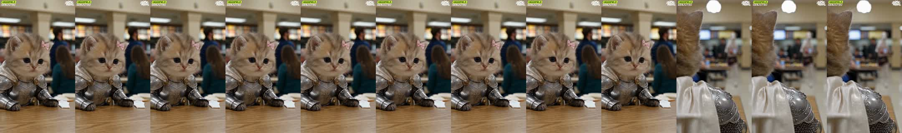
x_00.00| 카메라 움직임 | 고정(락오프). 0.30s(9프레임)짜리 티저 플래시 — 3번 컷과 같은 생성 클립에서 잘라 맨 앞에 붙인 '썸네일 프레임' |
|---|---|
| 화면 구성(구도) | 새끼고양이 얼굴 중심 x42%, y44%, 머리~가슴이 프레임 높이 60%, 테이블 상판 y78%, 좌측 1/3 선, 배경 인물 우측 보케 |
| 동물 행동/연기 | 무표정으로 정면 응시, 거의 정지 |
| 배경 | 보케 처리된 급식실(기둥, 형광등, 청록 스웨터 여학생 뒷모습) |
| 화면 문구/자막 | 없음 (상단 좌 HIGGSFIELD GENJUTSU 배지, 상단 우 SICKMANAI 로고만 상시) |
| 다음 컷 전환 | Hard cut — 하드컷 — 9프레임 티저 후 오버숄더 샷으로 점프 (첫 온셋 0.10s 이후 6프레임 늦게 컷) |
| BGM 상태 | 음악 시작 0.10s 첫 비트 |
Medium close-up of a tiny 7-week-old fluffy golden-shaded British Longhair kitten (cream-apricot fur with faint darker tabby ticking and an 'M' on the forehead, round flat face, huge round glossy near-black eyes, small pink nose, soft white whiskers, fluffy cheek ruff), a small pale-pink satin bow on its LEFT ear (viewer's right), wearing a polished silver medieval plate armor sized for a kitten: breastplate embossed with a fleur-de-lis and scrollwork, round brass rosette rivets on both shoulders, engraved filigree pauldrons, chainmail sleeves and chainmail skirt, smooth steel vambraces ending at the furry grey-brown paws, a brown leather diagonal belt with brass buckle, a short sword with round pommel on its left hip, and an ivory satin cape/hood draped over the shoulders, sitting at a wooden-laminate cafeteria table with both armored forearms resting on the table, paws flat, looking straight into the lens with a calm neutral face. Kitten head centered slightly left (x 42%, y 44%), table edge across lower fifth, folded paper napkin at right. Background: out-of-focus an American high-school cafeteria: drop ceiling with square fluorescent panels, white globe pendant lamps, beige walls and square beige columns, backlit menu screens above the serving line, long laminate tables with attached benches, speckled cream VCT tile floor, teenagers eating in the background, a man in a navy sweater and a long-haired girl in a teal top blurred at right. 85mm lens, f/1.8, photorealistic, shot on a full-frame cinema camera, natural overhead fluorescent light, slightly warm neutral white balance, shallow depth of field, fine film grain, 9:16 vertical.
Almost static locked-off shot; the kitten breathes softly and blinks once, whiskers twitch; background people drift slightly out of focus. No camera move. Keep armor, bow position and face identical. 5 s.
cartoon, 3D render, plastic fur, extra limbs, extra ears, deformed paws, human hands, text artifacts, misspelled letters, bow on wrong ear, helmet, changing armor design, blurry face, watermark, logo, subtitles, oversaturated, fisheye distortion
image2video 5s 1080x1920, 이 클립 하나로 1·3·5번 컷을 모두 잘라 씀(0-0.3 / 0.3-1.3 / 2.0-3.13). 시드 고정.
trim=0:0.30 then concat
clip 0.00-0.30, hard cut
Medium close-up of a tiny baby golden hamster (Syrian hamster, 3 weeks old) with plush golden-orange fur, cream-white belly and cheeks, tiny round pink-lined ears, huge round glossy black eyes, pink nose and whiskers, puffy cheek pouches, a small pale-pink satin bow on its LEFT ear, wearing the SAME kitten-sized polished silver plate armor (fleur-de-lis breastplate, brass shoulder rosettes, chainmail sleeves and skirt, steel vambraces, brown leather belt, tiny sword, ivory satin cape), sitting at a cafeteria table, forearms on the table, looking into the lens with a calm neutral face, same framing and background as the kitten version, photorealistic, shot on a full-frame cinema camera, natural overhead fluorescent light, slightly warm neutral white balance, shallow depth of field, fine film grain, 9:16 vertical.
Nearly static; the hamster blinks once, nose twitches, cheek pouches puff slightly. Locked camera. 5 s.
햄스터는 작아서 테이블 위 비율이 작아짐 — 프롬프트에 'hamster sized like a kitten, head filling 35% of frame'로 크기 고정
| 카메라 움직임 | 오버숄더(고양이 뒤통수+갑옷 어깨 전경)에서 시작 → 0.8~1.2s에 카메라가 어깨 위로 크레인 업하며 전진, 전경 고양이가 좌하단으로 빠지고 초점이 휘핏에게 랙포커스 → 이후 거의 고정된 와이드로 걸어오는 휘핏 |
|---|---|
| 화면 구성(구도) | 시작: 고양이 머리 좌측 x15%, 프레임 높이 55% 전경 블러, 갑옷 어깨 우하단. 이후: 휘핏 x77%, y45%, 전신 높이 58%, 좌측 파란티 금발 여학생 x20%, 천장 펜던트등 x45% y12%, 수평(테이블 라인) y55% |
| 동물 행동/연기 | Candy(휘핏)가 두 발로 트레이를 들고 테이블 사이 통로를 카메라 쪽으로 도도하게 걸어옴 |
| 배경 | 급식실 서빙 라인과 메뉴 스크린, 식사 중인 학생들 |
| 화면 문구/자막 | 없음 (상단 좌 HIGGSFIELD GENJUTSU 배지, 상단 우 SICKMANAI 로고만 상시) |
| 다음 컷 전환 | Hard cut — 하드컷 → 고양이 정면 MCU (리액션 컷). 비트 2.83보다 5프레임 앞 |
| BGM 상태 | 섹션A 비트(83.3BPM, 0.72s 펄스, 저역 위주 808/킥) 진행 중 (추정) |
Over-the-shoulder shot from behind a tiny 7-week-old fluffy golden-shaded British Longhair kitten (cream-apricot fur with faint darker tabby ticking and an 'M' on the forehead, round flat face, huge round glossy near-black eyes, small pink nose, soft white whiskers, fluffy cheek ruff), a small pale-pink satin bow on its LEFT ear (viewer's right), wearing a polished silver medieval plate armor sized for a kitten: breastplate embossed with a fleur-de-lis and scrollwork, round brass rosette rivets on both shoulders, engraved filigree pauldrons, chainmail sleeves and chainmail skirt, smooth steel vambraces ending at the furry grey-brown paws, a brown leather diagonal belt with brass buckle, a short sword with round pommel on its left hip, and an ivory satin cape/hood draped over the shoulders: the fluffy back of the kitten's head fills the left foreground out of focus, ivory cape and engraved silver pauldron with chainmail at bottom. In the background, in soft focus, 'Candy', an adult whippet with a short thin white coat showing pink skin, a blue-grey patch over its LEFT eye and ear (viewer's right), long narrow snout, black nose, rose ears, standing upright on its hind legs like a person, wearing small black boxing gloves and black Muay Thai boxing shorts with a black waistband and the word 'CANDY' in multicolor bubble letters surrounded by colorful gummy-candy shapes walks toward camera down the aisle carrying a dark brown plastic cafeteria tray holding a shiny red apple, a small blue-and-white milk carton and two slices of white sandwich bread. Setting: an American high-school cafeteria: drop ceiling with square fluorescent panels, white globe pendant lamps, beige walls and square beige columns, backlit menu screens above the serving line, long laminate tables with attached benches, speckled cream VCT tile floor, teenagers eating in the background, blonde girl in a blue T-shirt sitting at the left table. 35mm lens, f/2.8, photorealistic, shot on a full-frame cinema camera, natural overhead fluorescent light, slightly warm neutral white balance, shallow depth of field, fine film grain, 9:16 vertical.
Wide shot of the cafeteria aisle, 'Candy', an adult whippet with a short thin white coat showing pink skin, a blue-grey patch over its LEFT eye and ear (viewer's right), long narrow snout, black nose, rose ears, standing upright on its hind legs like a person, wearing small black boxing gloves and black Muay Thai boxing shorts with a black waistband and the word 'CANDY' in multicolor bubble letters surrounded by colorful gummy-candy shapes walking upright toward camera holding a dark brown plastic cafeteria tray holding a shiny red apple, a small blue-and-white milk carton and two slices of white sandwich bread, dog at right third, blonde girl in blue T-shirt at left table, pendant lamp top center, photorealistic, shot on a full-frame cinema camera, natural overhead fluorescent light, slightly warm neutral white balance, shallow depth of field, fine film grain, 9:16 vertical.
Camera starts over the kitten's shoulder, then cranes up and pushes forward over the shoulder so the kitten slides out of frame bottom-left while focus racks from the kitten fur to the dog; then the camera settles into a stable wide shot as the upright whippet walks confidently toward the lens, tray level, hips swaying, students keep eating. Smooth gimbal move, 5 s. Dog must stay bipedal, tray contents must not change.
cartoon, 3D render, plastic fur, extra limbs, extra ears, deformed paws, human hands, text artifacts, misspelled letters, bow on wrong ear, helmet, changing armor design, blurry face, watermark, logo, subtitles, oversaturated, fisheye distortion
first-last frame 5s (시작=OTS, 끝=와이드). 2.37s만 사용. 크레인 표현은 seedance가 유리
concat
hard cut
Over-the-shoulder shot from behind a tiny baby golden hamster (Syrian hamster, 3 weeks old) with plush golden-orange fur, cream-white belly and cheeks, tiny round pink-lined ears, huge round glossy black eyes, pink nose and whiskers, puffy cheek pouches, a small pale-pink satin bow on its LEFT ear, wearing the SAME kitten-sized polished silver plate armor (fleur-de-lis breastplate, brass shoulder rosettes, chainmail sleeves and skirt, steel vambraces, brown leather belt, tiny sword, ivory satin cape), back of its golden fluffy head and armor pauldron in the left foreground, 'Candy', an adult whippet with a short thin white coat showing pink skin, a blue-grey patch over its LEFT eye and ear (viewer's right), long narrow snout, black nose, rose ears, standing upright on its hind legs like a person, wearing small black boxing gloves and black Muay Thai boxing shorts with a black waistband and the word 'CANDY' in multicolor bubble letters surrounded by colorful gummy-candy shapes walking toward camera with the tray in the background, an American high-school cafeteria: drop ceiling with square fluorescent panels, white globe pendant lamps, beige walls and square beige columns, backlit menu screens above the serving line, long laminate tables with attached benches, speckled cream VCT tile floor, teenagers eating in the background, photorealistic, shot on a full-frame cinema camera, natural overhead fluorescent light, slightly warm neutral white balance, shallow depth of field, fine film grain, 9:16 vertical.
Camera cranes up over the hamster's shoulder and pushes forward, focus racks to the upright whippet walking toward the lens with the tray; settles into a stable wide shot. 5 s.
휘핏(Candy)은 그대로 유지 — 주인공만 교체
| 카메라 움직임 | 고정. 마지막 2프레임(3.63~3.67)에 Candy가 지나가며 트레이+우유팩이 렌즈 앞을 좌→우로 가리는 '전경 와이프' |
|---|---|
| 화면 구성(구도) | 1번과 동일 구도: 얼굴 x42% y42%, 높이 60% |
| 동물 행동/연기 | 무표정으로 정면을 봄 → 거의 미동 없음(시선 추적) |
| 배경 | 보케 급식실, 뒤 남성이 걸어감 |
| 화면 문구/자막 | 없음 (상단 좌 HIGGSFIELD GENJUTSU 배지, 상단 우 SICKMANAI 로고만 상시) |
| 다음 컷 전환 | Foreground wipe + hard cut — 트레이·우유팩이 렌즈 앞을 2프레임 가린 뒤 하드컷(모션 매치 컷) → 휘핏 로우앵글. 비트 3.55 뒤 3.6프레임 |
| BGM 상태 | 섹션A 비트(83.3BPM, 0.72s 펄스, 저역 위주 808/킥) 진행 중 (추정) |
Medium close-up of a tiny 7-week-old fluffy golden-shaded British Longhair kitten (cream-apricot fur with faint darker tabby ticking and an 'M' on the forehead, round flat face, huge round glossy near-black eyes, small pink nose, soft white whiskers, fluffy cheek ruff), a small pale-pink satin bow on its LEFT ear (viewer's right), wearing a polished silver medieval plate armor sized for a kitten: breastplate embossed with a fleur-de-lis and scrollwork, round brass rosette rivets on both shoulders, engraved filigree pauldrons, chainmail sleeves and chainmail skirt, smooth steel vambraces ending at the furry grey-brown paws, a brown leather diagonal belt with brass buckle, a short sword with round pommel on its left hip, and an ivory satin cape/hood draped over the shoulders, sitting at a wooden-laminate cafeteria table with both armored forearms resting on the table, paws flat, looking straight into the lens with a calm neutral face. Kitten head centered slightly left (x 42%, y 44%), table edge across lower fifth, folded paper napkin at right. Background: out-of-focus an American high-school cafeteria: drop ceiling with square fluorescent panels, white globe pendant lamps, beige walls and square beige columns, backlit menu screens above the serving line, long laminate tables with attached benches, speckled cream VCT tile floor, teenagers eating in the background, a man in a navy sweater and a long-haired girl in a teal top blurred at right. 85mm lens, f/1.8, photorealistic, shot on a full-frame cinema camera, natural overhead fluorescent light, slightly warm neutral white balance, shallow depth of field, fine film grain, 9:16 vertical.
Kitten stays still looking at the lens; at the very end a brown cafeteria tray with a blue milk carton swings across the foreground from left to right, briefly covering the lens. Locked camera. 5 s.
cartoon, 3D render, plastic fur, extra limbs, extra ears, deformed paws, human hands, text artifacts, misspelled letters, bow on wrong ear, helmet, changing armor design, blurry face, watermark, logo, subtitles, oversaturated, fisheye distortion
1번과 같은 클립(g01) 0.3~1.3s 구간 사용. 끝 와이프는 별도 PNG 합성이 더 쉽다
concat (wipe is in-camera; optional: overlay tray PNG sliding x:-1080→0 over 2 frames)
hard cut at 3.67; optional tray-PNG wipe layer 3.60-3.67
Medium close-up of a tiny baby golden hamster (Syrian hamster, 3 weeks old) with plush golden-orange fur, cream-white belly and cheeks, tiny round pink-lined ears, huge round glossy black eyes, pink nose and whiskers, puffy cheek pouches, a small pale-pink satin bow on its LEFT ear, wearing the SAME kitten-sized polished silver plate armor (fleur-de-lis breastplate, brass shoulder rosettes, chainmail sleeves and skirt, steel vambraces, brown leather belt, tiny sword, ivory satin cape), sitting at a cafeteria table, forearms on the table, looking into the lens with a calm neutral face, same framing and background as the kitten version, photorealistic, shot on a full-frame cinema camera, natural overhead fluorescent light, slightly warm neutral white balance, shallow depth of field, fine film grain, 9:16 vertical.
Hamster stays still staring at the lens; at the end a cafeteria tray swings across the foreground, covering the lens. 5 s.
| 카메라 움직임 | 로우앵글, 아주 느린 페데스탈 다운/전진(콘텐츠가 아래로 1px/f). 4.17~4.33 휘핏 고개를 살짝 돌림 |
|---|---|
| 화면 구성(구도) | 휘핏 머리 x72% y15%, 상체+반바지가 프레임 높이 90% (우측 2/3), 좌측 가장자리 남학생 어깨 전경, 천장 형광등·펜던트 좌상단, 트레이 y67% |
| 동물 행동/연기 | Candy가 트레이를 들고 도도하게 서서 주위를 흘끗 봄(자신만만한 표정) |
| 배경 | 형광등 천장, 메뉴 스크린, 학생들 |
| 화면 문구/자막 | 없음 (상단 좌 HIGGSFIELD GENJUTSU 배지, 상단 우 SICKMANAI 로고만 상시) |
| 다음 컷 전환 | Hard cut — 하드컷 → 고양이 미소 MCU (비트 4.27과 4.99 사이 오프비트) |
| BGM 상태 | 섹션A 비트(83.3BPM, 0.72s 펄스, 저역 위주 808/킥) 진행 중 (추정) |
Low-angle medium shot of 'Candy', an adult whippet with a short thin white coat showing pink skin, a blue-grey patch over its LEFT eye and ear (viewer's right), long narrow snout, black nose, rose ears, standing upright on its hind legs like a person, wearing small black boxing gloves and black Muay Thai boxing shorts with a black waistband and the word 'CANDY' in multicolor bubble letters surrounded by colorful gummy-candy shapes, standing upright at the end of a cafeteria table holding a dark brown plastic cafeteria tray holding a shiny red apple, a small blue-and-white milk carton and two slices of white sandwich bread at waist height with both gloved paws, head at top right third looking slightly down with a smug confident face, 'CANDY' shorts clearly readable at bottom. Foreground left edge: blurred shoulder of a seated student. Background: an American high-school cafeteria: drop ceiling with square fluorescent panels, white globe pendant lamps, beige walls and square beige columns, backlit menu screens above the serving line, long laminate tables with attached benches, speckled cream VCT tile floor, teenagers eating in the background, fluorescent ceiling panels and a globe pendant lamp at upper left. 28mm lens, f/2.8, photorealistic, shot on a full-frame cinema camera, natural overhead fluorescent light, slightly warm neutral white balance, shallow depth of field, fine film grain, 9:16 vertical.
Slow subtle push-in/pedestal down; the whippet stands tall, glances left then back to camera with a smug look, tray stays perfectly level, ears flick. 5 s. Keep 'CANDY' lettering, gloves and tray contents unchanged.
cartoon, 3D render, plastic fur, extra limbs, extra ears, deformed paws, human hands, text artifacts, misspelled letters, bow on wrong ear, helmet, changing armor design, blurry face, watermark, logo, subtitles, oversaturated, fisheye distortion
image2video 5s, 0.83s만 사용. 반바지 글자 뭉개지면 nano-banana-pro 로 시작프레임 재생성 후 kling
concat
hard cut
Dog-only shot: reuse the original image prompt unchanged.
Same as original (dog-only shot).
휘핏 단독 컷 — 교체 불필요
| 카메라 움직임 | 고정. 1·3번과 같은 셋업(같은 생성 클립 추정) |
|---|---|
| 화면 구성(구도) | 얼굴 x40% y40%, 높이 60%, 뒤 남성 우상단 x80% y20% |
| 동물 행동/연기 | 새끼고양이가 Candy를 보고 입꼬리를 올려 수줍게 미소(반함) |
| 배경 | 보케 급식실, 뒤 남성이 웃으며 걸어감 |
| 화면 문구/자막 | 없음 (상단 좌 HIGGSFIELD GENJUTSU 배지, 상단 우 SICKMANAI 로고만 상시) |
| 다음 컷 전환 | Cut-in (punch-in cut) — 같은 축으로 ECU로 점프 컷인(스케일 약 2배). 비트 5.71보다 2.4프레임 앞 |
| BGM 상태 | 섹션A 비트(83.3BPM, 0.72s 펄스, 저역 위주 808/킥) 진행 중 (추정) |
Medium close-up of a tiny 7-week-old fluffy golden-shaded British Longhair kitten (cream-apricot fur with faint darker tabby ticking and an 'M' on the forehead, round flat face, huge round glossy near-black eyes, small pink nose, soft white whiskers, fluffy cheek ruff), a small pale-pink satin bow on its LEFT ear (viewer's right), wearing a polished silver medieval plate armor sized for a kitten: breastplate embossed with a fleur-de-lis and scrollwork, round brass rosette rivets on both shoulders, engraved filigree pauldrons, chainmail sleeves and chainmail skirt, smooth steel vambraces ending at the furry grey-brown paws, a brown leather diagonal belt with brass buckle, a short sword with round pommel on its left hip, and an ivory satin cape/hood draped over the shoulders, sitting at a wooden-laminate cafeteria table with both armored forearms resting on the table, paws flat, looking straight into the lens with a calm neutral face. Kitten head centered slightly left (x 42%, y 44%), table edge across lower fifth, folded paper napkin at right. Background: out-of-focus an American high-school cafeteria: drop ceiling with square fluorescent panels, white globe pendant lamps, beige walls and square beige columns, backlit menu screens above the serving line, long laminate tables with attached benches, speckled cream VCT tile floor, teenagers eating in the background, a man in a navy sweater and a long-haired girl in a teal top blurred at right. 85mm lens, f/1.8, photorealistic, shot on a full-frame cinema camera, natural overhead fluorescent light, slightly warm neutral white balance, shallow depth of field, fine film grain, 9:16 vertical.
The kitten slowly curls the corners of its mouth into a shy, smitten little smile, eyes soften, head tilts 5 degrees; locked camera, background man walks past smiling. 5 s.
cartoon, 3D render, plastic fur, extra limbs, extra ears, deformed paws, human hands, text artifacts, misspelled letters, bow on wrong ear, helmet, changing armor design, blurry face, watermark, logo, subtitles, oversaturated, fisheye distortion
g01 2.0~3.13s 구간(또는 별도 5s 생성). 미소는 'subtle smile' 강조, 과장 금지
concat (or: crop=540:960:270:300,scale=1080:1920 if using a digital punch-in)
hard cut; or scale 1→2 instant punch-in on same clip
Medium close-up of a tiny baby golden hamster (Syrian hamster, 3 weeks old) with plush golden-orange fur, cream-white belly and cheeks, tiny round pink-lined ears, huge round glossy black eyes, pink nose and whiskers, puffy cheek pouches, a small pale-pink satin bow on its LEFT ear, wearing the SAME kitten-sized polished silver plate armor (fleur-de-lis breastplate, brass shoulder rosettes, chainmail sleeves and skirt, steel vambraces, brown leather belt, tiny sword, ivory satin cape), sitting at a cafeteria table, forearms on the table, looking into the lens with a calm neutral face, same framing and background as the kitten version, photorealistic, shot on a full-frame cinema camera, natural overhead fluorescent light, slightly warm neutral white balance, shallow depth of field, fine film grain, 9:16 vertical.
The hamster slowly gives a shy smitten little smile, cheeks puff, head tilts slightly; locked camera. 5 s.
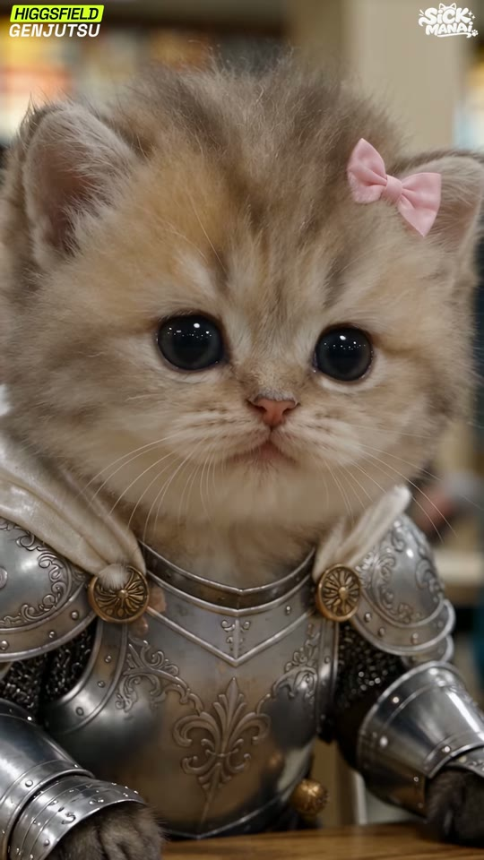
s06_in_05.70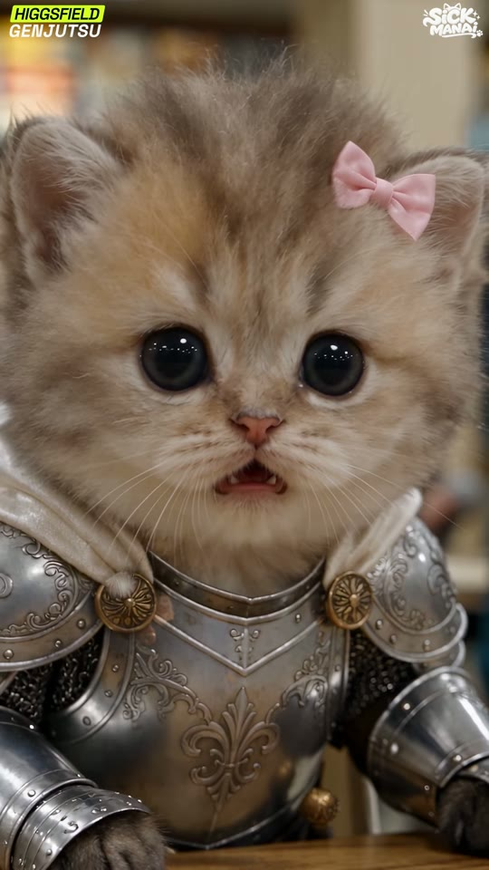
s06_out_06.16| 카메라 움직임 | 고정, 아주 미세한 푸시인. 6.0s 부근 눈이 커지고 입을 벌림('고양이 감각' 발동) |
|---|---|
| 화면 구성(구도) | 얼굴이 프레임 폭 100%, 눈 라인 y40%, 코 x55% y48%, 흉갑 하단 1/3 |
| 동물 행동/연기 | 갑자기 무언가를 감지 — 눈 동그래지고 입을 벌려 놀람/경계 |
| 배경 | 배경 거의 날아간 보케(따뜻한 색 조각) |
| 화면 문구/자막 | 없음 (상단 좌 HIGGSFIELD GENJUTSU 배지, 상단 우 SICKMANAI 로고만 상시) |
| 다음 컷 전환 | Hard cut — 하드컷 → 바닥 ECU (원인 제시 컷). 비트 6.45보다 6.6프레임 앞 |
| BGM 상태 | 음악 위 고음역 '감각 발동' 효과 (스펙트럼 중심 2.9kHz로 급상승 — 5.6~6.6s) (추정) |
Extreme close-up of the face of a tiny 7-week-old fluffy golden-shaded British Longhair kitten (cream-apricot fur with faint darker tabby ticking and an 'M' on the forehead, round flat face, huge round glossy near-black eyes, small pink nose, soft white whiskers, fluffy cheek ruff), a small pale-pink satin bow on its LEFT ear (viewer's right), wearing a polished silver medieval plate armor sized for a kitten: breastplate embossed with a fleur-de-lis and scrollwork, round brass rosette rivets on both shoulders, engraved filigree pauldrons, chainmail sleeves and chainmail skirt, smooth steel vambraces ending at the furry grey-brown paws, a brown leather diagonal belt with brass buckle, a short sword with round pommel on its left hip, and an ivory satin cape/hood draped over the shoulders, face filling the whole frame width, huge glossy black eyes at 40% height, pink bow at top right, top of the fleur-de-lis breastplate and brass rosettes in the lower third. Warm blurred cafeteria bokeh background. 100mm macro, f/2, photorealistic, shot on a full-frame cinema camera, natural overhead fluorescent light, slightly warm neutral white balance, shallow depth of field, fine film grain, 9:16 vertical.
Micro push-in; the kitten's pupils dilate, eyes widen, ears perk forward, then its mouth drops open in a small alarmed gasp showing tiny teeth, as if sensing danger. 5 s. No head turn, no camera shake.
cartoon, 3D render, plastic fur, extra limbs, extra ears, deformed paws, human hands, text artifacts, misspelled letters, bow on wrong ear, helmet, changing armor design, blurry face, watermark, logo, subtitles, oversaturated, fisheye distortion
5s 생성 후 마지막 0.6s(입 벌리는 순간)만 사용
concat
hard cut
Extreme close-up of the face of a tiny baby golden hamster (Syrian hamster, 3 weeks old) with plush golden-orange fur, cream-white belly and cheeks, tiny round pink-lined ears, huge round glossy black eyes, pink nose and whiskers, puffy cheek pouches, a small pale-pink satin bow on its LEFT ear, wearing the SAME kitten-sized polished silver plate armor (fleur-de-lis breastplate, brass shoulder rosettes, chainmail sleeves and skirt, steel vambraces, brown leather belt, tiny sword, ivory satin cape), huge glossy black eyes, pink bow, top of the armor in the lower third, warm cafeteria bokeh, photorealistic, shot on a full-frame cinema camera, natural overhead fluorescent light, slightly warm neutral white balance, shallow depth of field, fine film grain, 9:16 vertical.
Micro push-in; the hamster's eyes widen, whiskers twitch forward, then its mouth opens in a small alarmed gasp showing tiny front teeth. 5 s.
햄스터 앞니 2개가 보이도록 — '햄스터 감각' 컷
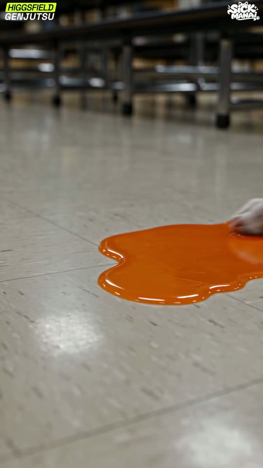
s07_in_06.30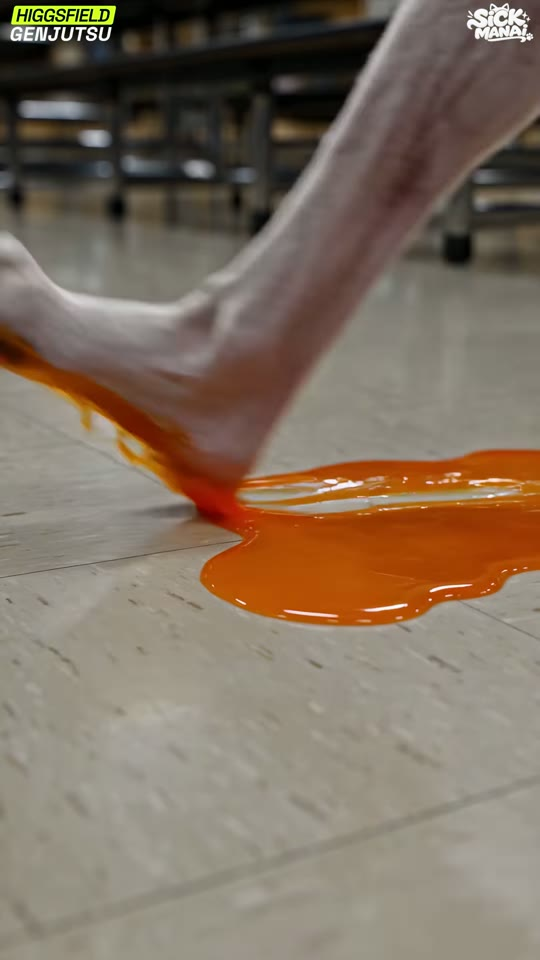
s07_out_06.60| 카메라 움직임 | 바닥 높이 고정, 미세 핸드헬드 |
|---|---|
| 화면 구성(구도) | 주황 웅덩이 x65% y57%, 프레임 폭 60%, 수평(테이블 다리 라인) y20%, 바닥 전면 |
| 동물 행동/연기 | 화면 우측에서 Candy의 흰 뒷발이 주황색(오렌지주스/소스) 웅덩이를 밟고 미끄러지며 소스가 튐 |
| 배경 | 테이블 다리들이 보케로 줄지어 선 급식실 바닥 |
| 화면 문구/자막 | 없음 (상단 좌 HIGGSFIELD GENJUTSU 배지, 상단 우 SICKMANAI 로고만 상시) |
| 다음 컷 전환 | Hard cut — 하드컷 → 휘핏 로우앵글 미끄러짐. 비트 6.45 뒤 6.6프레임 |
| BGM 상태 | 섹션A 비트(83.3BPM, 0.72s 펄스, 저역 위주 808/킥) 진행 중 (추정) |
Floor-level insert shot of a glossy bright-orange liquid puddle (spilled orange juice) on a speckled cream VCT cafeteria floor, puddle at center-right, rows of blurred table legs and benches in the background at the top fifth, cool fluorescent reflections on the floor. A white whippet hind foot enters from the right edge. 24mm lens at 10 cm height, f/2.8, photorealistic, shot on a full-frame cinema camera, natural overhead fluorescent light, slightly warm neutral white balance, shallow depth of field, fine film grain, 9:16 vertical.
The white whippet's bare hind foot steps into the orange puddle from the right and immediately slides forward, liquid splashes and smears in a long streak, the leg shoots out of frame to the left. Fast, physical, 5 s; camera locked at floor level.
cartoon, 3D render, plastic fur, extra limbs, extra ears, deformed paws, human hands, text artifacts, misspelled letters, bow on wrong ear, helmet, changing armor design, blurry face, watermark, logo, subtitles, oversaturated, fisheye distortion
5s, 0.44s만 사용. 액체 물리는 veo-3-1 우선
concat
hard cut
Same floor-level insert (dog foot) — unchanged.
Unchanged.
휘핏 발 컷 — 교체 불필요
| 카메라 움직임 | 로우앵글 고정 → 6.93s 트레이가 아래에서 위로 렌즈 앞을 휙 지나감(자연 와이프) → 몸이 뒤로 넘어가며 앞발을 번쩍 듦, 카메라 살짝 틸트업 |
|---|---|
| 화면 구성(구도) | 휘핏 머리 x60% y35%, 목~가슴 프레임 높이 70%, 천장 형광등 상단 y10~25% |
| 동물 행동/연기 | 놀라 입 벌림 → 트레이가 튀어오름 → 두 팔을 번쩍 들고 뒤로 넘어가며 고개가 젖혀짐 |
| 배경 | 천장과 메뉴 스크린 |
| 화면 문구/자막 | 없음 (상단 좌 HIGGSFIELD GENJUTSU 배지, 상단 우 SICKMANAI 로고만 상시) |
| 다음 컷 전환 | Hard cut — 하드컷 → 천장을 보는 POV(물건 낙하). 비트 7.12 뒤 3.3프레임 |
| BGM 상태 | 섹션A 비트(83.3BPM, 0.72s 펄스, 저역 위주 808/킥) 진행 중 (추정) |
Extreme low-angle medium close-up of 'Candy', an adult whippet with a short thin white coat showing pink skin, a blue-grey patch over its LEFT eye and ear (viewer's right), long narrow snout, black nose, rose ears, standing upright on its hind legs like a person, wearing small black boxing gloves and black Muay Thai boxing shorts with a black waistband and the word 'CANDY' in multicolor bubble letters surrounded by colorful gummy-candy shapes's face and chest from table height, holding a dark brown plastic cafeteria tray holding a shiny red apple, a small blue-and-white milk carton and two slices of white sandwich bread at the bottom edge, ceiling fluorescent panels and a globe pendant lamp behind its head, an American high-school cafeteria: drop ceiling with square fluorescent panels, white globe pendant lamps, beige walls and square beige columns, backlit menu screens above the serving line, long laminate tables with attached benches, speckled cream VCT tile floor, teenagers eating in the background. 24mm, f/2.8, photorealistic, shot on a full-frame cinema camera, natural overhead fluorescent light, slightly warm neutral white balance, shallow depth of field, fine film grain, 9:16 vertical.
The whippet's feet slip: its mouth opens in shock, the tray flips upward past the lens, milk carton flying, and the dog throws both gloved arms up and falls backward, head tilting back toward the ceiling. Fast 0.5 s action then slight slow motion. Camera locked low, slight tilt up. 5 s.
cartoon, 3D render, plastic fur, extra limbs, extra ears, deformed paws, human hands, text artifacts, misspelled letters, bow on wrong ear, helmet, changing armor design, blurry face, watermark, logo, subtitles, oversaturated, fisheye distortion
5s, 0.56s만 사용. 필요 시 60fps로 생성해 느리게
concat
hard cut
Dog-only shot — unchanged.
Unchanged.
휘핏 단독 — 교체 불필요
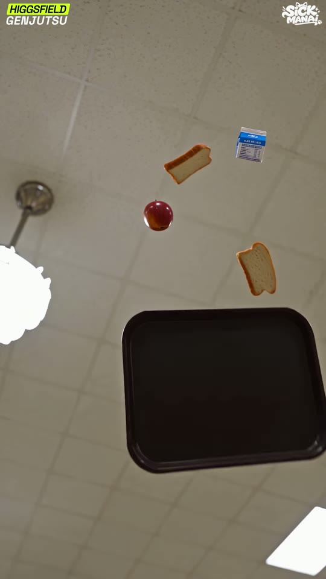
s09_out_07.83| 카메라 움직임 | 천장을 올려다보는 POV 고정, 물건들이 슬로모션으로 공중에 떠 있다가 떨어지기 시작 |
|---|---|
| 화면 구성(구도) | 트레이 x62% y68% 프레임 폭 60%, 사과 x48% y36%, 우유팩 x77% y25%, 빵 x57% y28% / x78% y46%, 펜던트등 좌측 y40%, 형광 패널 우하단 |
| 동물 행동/연기 | 트레이·사과·우유팩·식빵 2장이 천장을 배경으로 슬로모션 공중 회전 |
| 배경 | 석고보드 천장 타일, 형광등, 펜던트등 |
| 화면 문구/자막 | 없음 (상단 좌 HIGGSFIELD GENJUTSU 배지, 상단 우 SICKMANAI 로고만 상시) |
| 다음 컷 전환 | Hard cut (cross-cut) — 하드컷 → 고양이 리액션. 비트 7.89에 정확히(0.3프레임) — 이 영상 전반부에서 비트에 맞춘 드문 컷 |
| BGM 상태 | 슬로모션 구간 — 음악 위 저역 '시간 느려짐' 효과 (추정) |
Worm's-eye POV looking straight up at a white acoustic-tile drop ceiling with a square fluorescent panel at the bottom-right corner and a white globe pendant lamp at the left edge. Floating in mid-air in slow motion: a dark brown plastic cafeteria tray (large, lower center, tilted), a red apple, a blue-and-white milk carton and two slices of white bread spinning above it. 20mm lens, deep focus, photorealistic, shot on a full-frame cinema camera, natural overhead fluorescent light, slightly warm neutral white balance, shallow depth of field, fine film grain, 9:16 vertical.
Super slow motion (about 25% speed): the tray, apple, milk carton and bread slices tumble and rotate in the air, then begin to fall toward the camera, the tray growing larger and exiting the bottom of frame at the end. Camera perfectly static. 5 s.
cartoon, 3D render, plastic fur, extra limbs, extra ears, deformed paws, human hands, text artifacts, misspelled letters, bow on wrong ear, helmet, changing armor design, blurry face, watermark, logo, subtitles, oversaturated, fisheye distortion
5s 하나 생성해 9번(0~0.67s)과 11번(1.6~2.07s)에 나눠 사용(교차편집)
concat
hard cut on beat
Unchanged (object-only POV).
Unchanged.
사물 컷 — 교체 불필요
| 카메라 움직임 | 빠른 핸드헬드(흐름 3.9px/f), 휘핏의 팔이 전경을 블러로 휩쓸고 지나감(자연 와이프) → 고양이 3/4 측면으로 재프레이밍 |
|---|---|
| 화면 구성(구도) | 고양이 머리 x30% y25% → 끝 x50% y40%, 몸 프레임 높이 75%, 천장 상단 1/3 |
| 동물 행동/연기 | 고양이가 위를 올려다보며 벌떡 일어나 반응, 눈으로 낙하물을 추적 |
| 배경 | 급식실 테이블과 트레이(샐러드, 우유), 학생들 |
| 화면 문구/자막 | 없음 (상단 좌 HIGGSFIELD GENJUTSU 배지, 상단 우 SICKMANAI 로고만 상시) |
| 다음 컷 전환 | Hard cut (cross-cut) — 하드컷 → 다시 천장 POV. 비트 8.51 뒤 9.6프레임(액션 기준 컷) |
| BGM 상태 | 섹션A 비트(83.3BPM, 0.72s 펄스, 저역 위주 808/킥) 진행 중 (추정) |
Low side-angle medium shot of a tiny 7-week-old fluffy golden-shaded British Longhair kitten (cream-apricot fur with faint darker tabby ticking and an 'M' on the forehead, round flat face, huge round glossy near-black eyes, small pink nose, soft white whiskers, fluffy cheek ruff), a small pale-pink satin bow on its LEFT ear (viewer's right), wearing a polished silver medieval plate armor sized for a kitten: breastplate embossed with a fleur-de-lis and scrollwork, round brass rosette rivets on both shoulders, engraved filigree pauldrons, chainmail sleeves and chainmail skirt, smooth steel vambraces ending at the furry grey-brown paws, a brown leather diagonal belt with brass buckle, a short sword with round pommel on its left hip, and an ivory satin cape/hood draped over the shoulders, seated at the edge of a cafeteria table with a tray of salad in front of it, head turned up looking at the ceiling with wide alert eyes, gauntleted paw on the table. an American high-school cafeteria: drop ceiling with square fluorescent panels, white globe pendant lamps, beige walls and square beige columns, backlit menu screens above the serving line, long laminate tables with attached benches, speckled cream VCT tile floor, teenagers eating in the background behind, fluorescent panels above. 35mm, f/2, photorealistic, shot on a full-frame cinema camera, natural overhead fluorescent light, slightly warm neutral white balance, shallow depth of field, fine film grain, 9:16 vertical.
Handheld, energetic: the kitten snaps its head upward tracking falling objects and rises onto its hind legs; the whippet's white arm swings through the foreground as a motion-blurred wipe; camera re-frames to a 3/4 profile of the determined kitten. 5 s.
cartoon, 3D render, plastic fur, extra limbs, extra ears, deformed paws, human hands, text artifacts, misspelled letters, bow on wrong ear, helmet, changing armor design, blurry face, watermark, logo, subtitles, oversaturated, fisheye distortion
5s, 0.93s 사용. 팔 스윕은 프롬프트로 안 나오면 생략 가능
concat
hard cut
Low side-angle medium shot of a tiny baby golden hamster (Syrian hamster, 3 weeks old) with plush golden-orange fur, cream-white belly and cheeks, tiny round pink-lined ears, huge round glossy black eyes, pink nose and whiskers, puffy cheek pouches, a small pale-pink satin bow on its LEFT ear, wearing the SAME kitten-sized polished silver plate armor (fleur-de-lis breastplate, brass shoulder rosettes, chainmail sleeves and skirt, steel vambraces, brown leather belt, tiny sword, ivory satin cape), seated at a cafeteria table, looking up at the ceiling with wide alert eyes, an American high-school cafeteria: drop ceiling with square fluorescent panels, white globe pendant lamps, beige walls and square beige columns, backlit menu screens above the serving line, long laminate tables with attached benches, speckled cream VCT tile floor, teenagers eating in the background, photorealistic, shot on a full-frame cinema camera, natural overhead fluorescent light, slightly warm neutral white balance, shallow depth of field, fine film grain, 9:16 vertical.
Handheld: the hamster snaps its head up tracking falling objects and rises onto its hind legs; a white whippet arm swipes through the foreground; camera reframes to a determined 3/4 profile. 5 s.
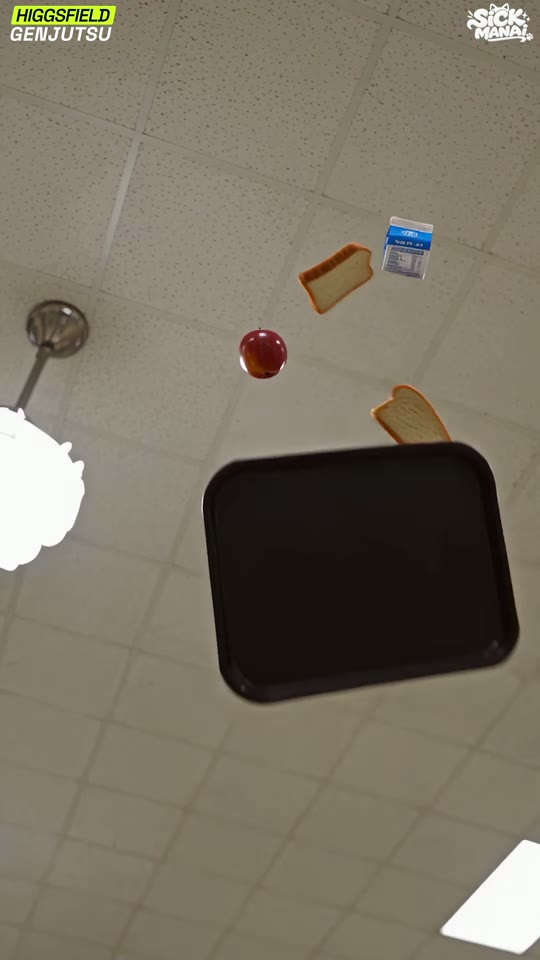
s11_in_08.90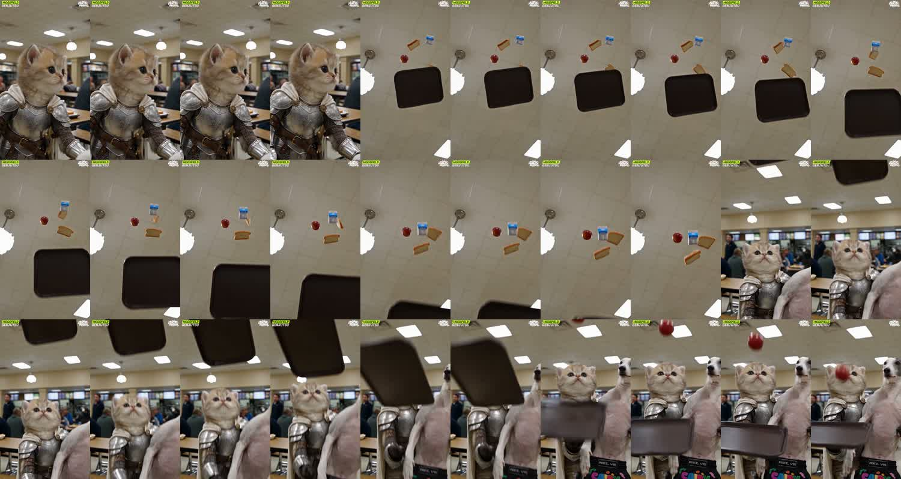
x_08.70| 카메라 움직임 | 9번과 동일 POV 계속(같은 생성 클립 후반부). 트레이가 커지며 아래로 빠짐 |
|---|---|
| 화면 구성(구도) | 9번과 동일, 트레이가 y68%→하단 밖 |
| 동물 행동/연기 | 물건들이 계속 떨어지고 트레이가 카메라 쪽으로 낙하해 프레임 아래로 빠짐 |
| 배경 | 천장 |
| 화면 문구/자막 | 없음 (상단 좌 HIGGSFIELD GENJUTSU 배지, 상단 우 SICKMANAI 로고만 상시) |
| 다음 컷 전환 | Hard cut — 하드컷 → 캐치 2샷. 비트 9.33에 정확히(-0.9프레임) |
| BGM 상태 | 섹션A 비트(83.3BPM, 0.72s 펄스, 저역 위주 808/킥) 진행 중 (추정) |
Worm's-eye POV looking straight up at a white acoustic-tile drop ceiling with a square fluorescent panel at the bottom-right corner and a white globe pendant lamp at the left edge. Floating in mid-air in slow motion: a dark brown plastic cafeteria tray (large, lower center, tilted), a red apple, a blue-and-white milk carton and two slices of white bread spinning above it. 20mm lens, deep focus, photorealistic, shot on a full-frame cinema camera, natural overhead fluorescent light, slightly warm neutral white balance, shallow depth of field, fine film grain, 9:16 vertical.
Super slow motion (about 25% speed): the tray, apple, milk carton and bread slices tumble and rotate in the air, then begin to fall toward the camera, the tray growing larger and exiting the bottom of frame at the end. Camera perfectly static. 5 s.
cartoon, 3D render, plastic fur, extra limbs, extra ears, deformed paws, human hands, text artifacts, misspelled letters, bow on wrong ear, helmet, changing armor design, blurry face, watermark, logo, subtitles, oversaturated, fisheye distortion
g07 1.6~2.07s 구간
concat
hard cut on beat
Unchanged.
Unchanged.
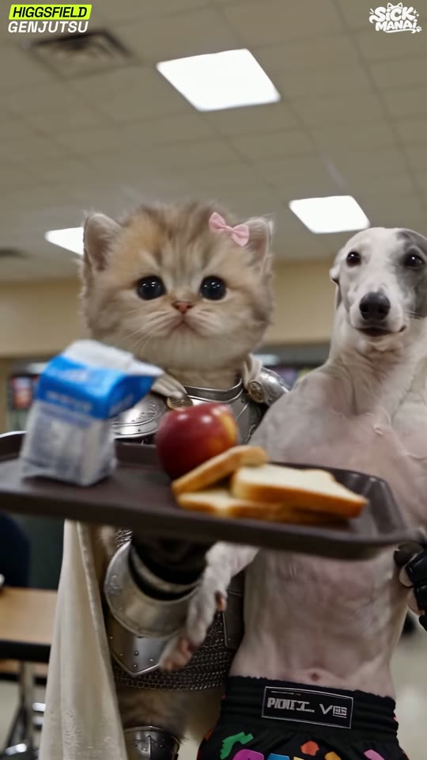
g_10.00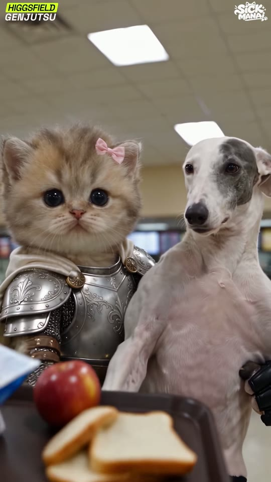
s11_mid_11.28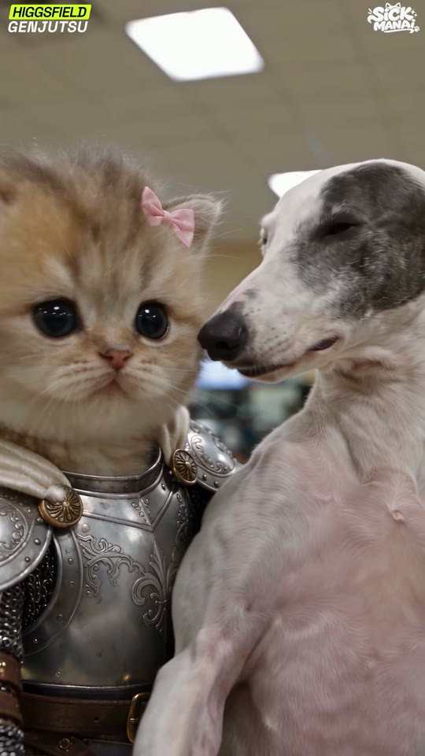
g_12.00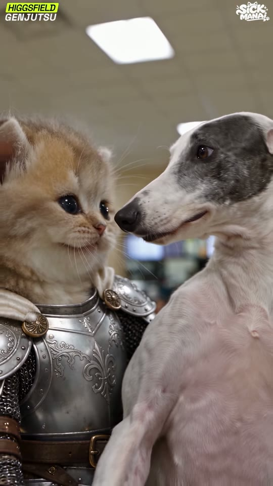
s11_out_13.66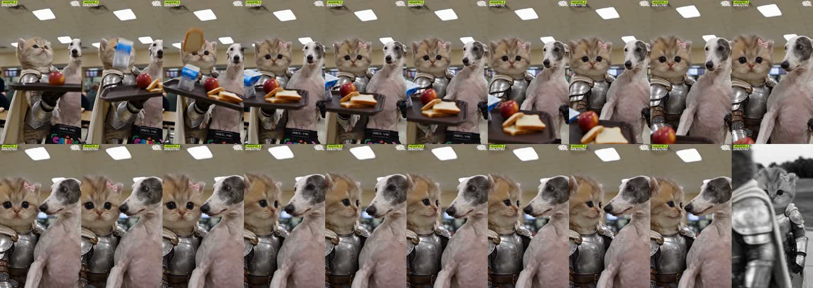
x_09.90| 카메라 움직임 | 로우앵글 미디엄 2샷으로 시작, 트레이 캐치 후 약 4초 동안 천천히 푸시인(돌리인)하여 두 얼굴 클로즈 2샷으로 |
|---|---|
| 화면 구성(구도) | 시작: 고양이 x25% y30%, 휘핏 x80% y20%, 트레이 y60% 좌측. 끝: 고양이 얼굴 x28% y38%, 휘핏 얼굴 x68% y40%, 두 얼굴이 좌우 1/3선, 높이 각 35% |
| 동물 행동/연기 | 9.3 트레이가 위에서 떨어짐 → 9.5 고양이가 한 앞발로 트레이 캐치 → 9.7 사과, 9.9 우유팩, 10.1~10.3 식빵이 차례로 정확히 트레이에 착지 → 고양이는 무표정 정면, Candy는 옆에서 서서 12.3부터 고개를 돌려 고양이를 사랑스럽게 바라봄 |
| 배경 | 급식실 천장 형광등, 메뉴 스크린 보케 |
| 화면 문구/자막 | 없음 (상단 좌 HIGGSFIELD GENJUTSU 배지, 상단 우 SICKMANAI 로고만 상시) |
| 다음 컷 전환 | Hard cut + audio drop — 하드컷 + 13.35~13.73 음악 페이드아웃→완전 무음(-120dB) 후, 13.73 정확히 흑백 몽타주+새 음악 섹션 동시 시작 (컬러→흑백 대비 전환) |
| BGM 상태 | 9.3~10.8 캐치 효과음 연타(온셋 0.22~0.3s 간격), 12.9 잠깐 딥, 13.35부터 페이드아웃 → 13.72 완전 무음 |
Low-angle medium two-shot in the cafeteria: at left a tiny 7-week-old fluffy golden-shaded British Longhair kitten (cream-apricot fur with faint darker tabby ticking and an 'M' on the forehead, round flat face, huge round glossy near-black eyes, small pink nose, soft white whiskers, fluffy cheek ruff), a small pale-pink satin bow on its LEFT ear (viewer's right), wearing a polished silver medieval plate armor sized for a kitten: breastplate embossed with a fleur-de-lis and scrollwork, round brass rosette rivets on both shoulders, engraved filigree pauldrons, chainmail sleeves and chainmail skirt, smooth steel vambraces ending at the furry grey-brown paws, a brown leather diagonal belt with brass buckle, a short sword with round pommel on its left hip, and an ivory satin cape/hood draped over the shoulders stands upright holding a dark brown plastic cafeteria tray holding a shiny red apple, a small blue-and-white milk carton and two slices of white sandwich bread balanced on one gauntleted paw, at right 'Candy', an adult whippet with a short thin white coat showing pink skin, a blue-grey patch over its LEFT eye and ear (viewer's right), long narrow snout, black nose, rose ears, standing upright on its hind legs like a person, wearing small black boxing gloves and black Muay Thai boxing shorts with a black waistband and the word 'CANDY' in multicolor bubble letters surrounded by colorful gummy-candy shapes stands upright beside it, both facing camera. Fluorescent ceiling panels above, blurred menu screens behind. 35mm, f/2.2, photorealistic, shot on a full-frame cinema camera, natural overhead fluorescent light, slightly warm neutral white balance, shallow depth of field, fine film grain, 9:16 vertical.
Close two-shot: a tiny 7-week-old fluffy golden-shaded British Longhair kitten (cream-apricot fur with faint darker tabby ticking and an 'M' on the forehead, round flat face, huge round glossy near-black eyes, small pink nose, soft white whiskers, fluffy cheek ruff), a small pale-pink satin bow on its LEFT ear (viewer's right), wearing a polished silver medieval plate armor sized for a kitten: breastplate embossed with a fleur-de-lis and scrollwork, round brass rosette rivets on both shoulders, engraved filigree pauldrons, chainmail sleeves and chainmail skirt, smooth steel vambraces ending at the furry grey-brown paws, a brown leather diagonal belt with brass buckle, a short sword with round pommel on its left hip, and an ivory satin cape/hood draped over the shoulders at left third looking into the lens deadpan, 'Candy', an adult whippet with a short thin white coat showing pink skin, a blue-grey patch over its LEFT eye and ear (viewer's right), long narrow snout, black nose, rose ears, standing upright on its hind legs like a person, wearing small black boxing gloves and black Muay Thai boxing shorts with a black waistband and the word 'CANDY' in multicolor bubble letters surrounded by colorful gummy-candy shapes at right third turned toward the kitten gazing lovingly, cafeteria ceiling light bokeh behind, photorealistic, shot on a full-frame cinema camera, natural overhead fluorescent light, slightly warm neutral white balance, shallow depth of field, fine film grain, 9:16 vertical.
Starts with the tray falling from above into frame; the kitten snaps out one paw and catches it perfectly level; the apple, then the milk carton, then two bread slices drop one by one exactly onto the tray in their original spots. The kitten stays deadpan staring at the lens. Then a slow 4-second dolly-in to a close two-shot; the whippet slowly turns its head toward the kitten and gazes at it adoringly with soft eyes and a slight smile. Realistic physics, no extra objects. 5 s.
cartoon, 3D render, plastic fur, extra limbs, extra ears, deformed paws, human hands, text artifacts, misspelled letters, bow on wrong ear, helmet, changing armor design, blurry face, watermark, logo, subtitles, oversaturated, fisheye distortion
first-last frame 5s(끝=클로즈 2샷). 캐치 물리는 veo-3-1, 캐릭터 유지는 kling-video-o1. 4.43s 사용
concat; audio: afade=t=out:st=13.35:d=0.38 on section A, section B starts adelay=13730
hard cut at 13.73; audio A fade-out 13.35-13.73, audio B at 13.73
Low-angle medium two-shot: at left a tiny baby golden hamster (Syrian hamster, 3 weeks old) with plush golden-orange fur, cream-white belly and cheeks, tiny round pink-lined ears, huge round glossy black eyes, pink nose and whiskers, puffy cheek pouches, a small pale-pink satin bow on its LEFT ear, wearing the SAME kitten-sized polished silver plate armor (fleur-de-lis breastplate, brass shoulder rosettes, chainmail sleeves and skirt, steel vambraces, brown leather belt, tiny sword, ivory satin cape) standing upright holding a dark brown plastic cafeteria tray holding a shiny red apple, a small blue-and-white milk carton and two slices of white sandwich bread on one paw, at right 'Candy', an adult whippet with a short thin white coat showing pink skin, a blue-grey patch over its LEFT eye and ear (viewer's right), long narrow snout, black nose, rose ears, standing upright on its hind legs like a person, wearing small black boxing gloves and black Muay Thai boxing shorts with a black waistband and the word 'CANDY' in multicolor bubble letters surrounded by colorful gummy-candy shapes, cafeteria, photorealistic, shot on a full-frame cinema camera, natural overhead fluorescent light, slightly warm neutral white balance, shallow depth of field, fine film grain, 9:16 vertical.
The tray falls in; the hamster catches it on one paw perfectly level; apple, milk, bread land one by one on the tray. Hamster stays deadpan; slow dolly-in to a close two-shot as the whippet turns and gazes at the hamster adoringly. 5 s.
햄스터가 트레이보다 작으므로 'tray scaled down / hamster as tall as the dog's chest'로 비율 조정 — 과장된 크기 대비가 오히려 웃음 포인트
| 카메라 움직임 | 좌측 전경 흐린 갑옷/망토 실루엣 앞을 카메라가 우측으로 트럭하며 고양이 공개(첫 4프레임 모션블러) |
|---|---|
| 화면 구성(구도) | 고양이 x50% y45%, 전신 높이 85%, 좌측 20% 전경 블러 |
| 동물 행동/연기 | 야외 공원 길에서 망토 두른 채 두 발로 서서 정면 응시 |
| 배경 | 흐린 하늘, 나무 숲, 아스팔트 길 |
| 화면 문구/자막 | 없음 (상단 좌 HIGGSFIELD GENJUTSU 배지, 상단 우 SICKMANAI 로고만 상시) |
| 다음 컷 전환 | Hard cut on beat — 비트 컷 — 다음 온셋 14.43s와 0~2프레임 이내(전부 온셋 직전 컷). 0.72s = 1박 |
| BGM 상태 | 섹션B 드롭 후 감성 비트 진행, 이 컷은 정확히 한 박(0.72s) (추정) |
Full shot (FS) of a tiny 7-week-old fluffy golden-shaded British Longhair kitten (cream-apricot fur with faint darker tabby ticking and an 'M' on the forehead, round flat face, huge round glossy near-black eyes, small pink nose, soft white whiskers, fluffy cheek ruff), a small pale-pink satin bow on its LEFT ear (viewer's right), wearing a polished silver medieval plate armor sized for a kitten: breastplate embossed with a fleur-de-lis and scrollwork, round brass rosette rivets on both shoulders, engraved filigree pauldrons, chainmail sleeves and chainmail skirt, smooth steel vambraces ending at the furry grey-brown paws, a brown leather diagonal belt with brass buckle, a short sword with round pommel on its left hip, and an ivory satin cape/hood draped over the shoulders, standing upright on its hind legs like a tiny knight, the ivory cape falling to the floor behind it, in outdoor park path at the edge of a lawn, dark tree line behind, overcast sky; blurred armored shoulder and cape in the left foreground. Kitten centered, looking into the lens with a calm, loyal, slightly melancholic expression. 50mm lens, black-and-white photograph look, rich silver-gelatin monochrome, soft window light, gentle contrast, deep but not crushed blacks, subtle grain, shallow depth of field, 9:16 vertical.
Camera trucks right past a blurred foreground shoulder to reveal the kitten standing guard on a park path, it turns slightly toward camera; 1 s of motion is enough. Keep the kitten's face, bow and armor identical to the reference; only subtle motion (0.7 s will be used). 5 s.
cartoon, 3D render, plastic fur, extra limbs, extra ears, deformed paws, human hands, text artifacts, misspelled letters, bow on wrong ear, helmet, changing armor design, blurry face, watermark, logo, subtitles, oversaturated, fisheye distortion
캐릭터 레퍼런스 시트 + nano-banana-pro로 컬러 시작프레임 생성 → kling-v3-omni 5s → 편집에서 흑백 그레이드(hue=s=0). 0.7s만 쓰므로 5s 중 가장 안정된 구간 선택
concat
hard cut exactly on beat marker
Full shot (FS) of a tiny baby golden hamster (Syrian hamster, 3 weeks old) with plush golden-orange fur, cream-white belly and cheeks, tiny round pink-lined ears, huge round glossy black eyes, pink nose and whiskers, puffy cheek pouches, a small pale-pink satin bow on its LEFT ear, wearing the SAME kitten-sized polished silver plate armor (fleur-de-lis breastplate, brass shoulder rosettes, chainmail sleeves and skirt, steel vambraces, brown leather belt, tiny sword, ivory satin cape), standing upright on its hind legs like a tiny knight, cape to the floor, in outdoor park path at the edge of a lawn, dark tree line behind, overcast sky; blurred armored shoulder and cape in the left foreground, looking into the lens with a calm loyal expression, 50mm lens, black-and-white photograph look, rich silver-gelatin monochrome, soft window light, gentle contrast, deep but not crushed blacks, subtle grain, shallow depth of field, 9:16 vertical.
Camera trucks right past a blurred foreground shoulder to reveal the hamster standing guard on a park path, it turns slightly toward camera; 1 s of motion is enough. 5 s.
흑백은 생성 후 편집에서 입히는 게 캐릭터 일관성에 유리
| 카메라 움직임 | 느린 좌→우 트럭(콘텐츠 좌로 이동) |
|---|---|
| 화면 구성(구도) | 고양이 x40% y45%, 높이 85%, 우측 배경에 검은 옷 행인 |
| 동물 행동/연기 | 큰 나무 아래 서서 3/4 방향으로 서 있음(경호하듯) |
| 배경 | 나무 그늘, 벤치, 행인 |
| 화면 문구/자막 | 없음 (상단 좌 HIGGSFIELD GENJUTSU 배지, 상단 우 SICKMANAI 로고만 상시) |
| 다음 컷 전환 | Hard cut on beat — 비트 컷 — 다음 온셋 15.17s와 0~2프레임 이내(전부 온셋 직전 컷). 0.72s = 1박 |
| BGM 상태 | 섹션B 드롭 후 감성 비트 진행, 이 컷은 정확히 한 박(0.72s) (추정) |
Medium full shot (MFS) of a tiny 7-week-old fluffy golden-shaded British Longhair kitten (cream-apricot fur with faint darker tabby ticking and an 'M' on the forehead, round flat face, huge round glossy near-black eyes, small pink nose, soft white whiskers, fluffy cheek ruff), a small pale-pink satin bow on its LEFT ear (viewer's right), wearing a polished silver medieval plate armor sized for a kitten: breastplate embossed with a fleur-de-lis and scrollwork, round brass rosette rivets on both shoulders, engraved filigree pauldrons, chainmail sleeves and chainmail skirt, smooth steel vambraces ending at the furry grey-brown paws, a brown leather diagonal belt with brass buckle, a short sword with round pommel on its left hip, and an ivory satin cape/hood draped over the shoulders, standing upright on its hind legs like a tiny knight, the ivory cape falling to the floor behind it, in under a large leafy tree in a park, a person in dark clothes standing behind at right, a dark tent/bag at right edge. Kitten centered, looking into the lens with a calm, loyal, slightly melancholic expression. 50mm lens, black-and-white photograph look, rich silver-gelatin monochrome, soft window light, gentle contrast, deep but not crushed blacks, subtle grain, shallow depth of field, 9:16 vertical.
Slow truck left-to-right; kitten stands guard in 3/4 view, cape moving gently in the breeze. Keep the kitten's face, bow and armor identical to the reference; only subtle motion (0.7 s will be used). 5 s.
cartoon, 3D render, plastic fur, extra limbs, extra ears, deformed paws, human hands, text artifacts, misspelled letters, bow on wrong ear, helmet, changing armor design, blurry face, watermark, logo, subtitles, oversaturated, fisheye distortion
캐릭터 레퍼런스 시트 + nano-banana-pro로 컬러 시작프레임 생성 → kling-v3-omni 5s → 편집에서 흑백 그레이드(hue=s=0). 0.7s만 쓰므로 5s 중 가장 안정된 구간 선택
concat
hard cut exactly on beat marker
Medium full shot (MFS) of a tiny baby golden hamster (Syrian hamster, 3 weeks old) with plush golden-orange fur, cream-white belly and cheeks, tiny round pink-lined ears, huge round glossy black eyes, pink nose and whiskers, puffy cheek pouches, a small pale-pink satin bow on its LEFT ear, wearing the SAME kitten-sized polished silver plate armor (fleur-de-lis breastplate, brass shoulder rosettes, chainmail sleeves and skirt, steel vambraces, brown leather belt, tiny sword, ivory satin cape), standing upright on its hind legs like a tiny knight, cape to the floor, in under a large leafy tree in a park, a person in dark clothes standing behind at right, a dark tent/bag at right edge, looking into the lens with a calm loyal expression, 50mm lens, black-and-white photograph look, rich silver-gelatin monochrome, soft window light, gentle contrast, deep but not crushed blacks, subtle grain, shallow depth of field, 9:16 vertical.
Slow truck left-to-right; hamster stands guard in 3/4 view, cape moving gently in the breeze. 5 s.
흑백은 생성 후 편집에서 입히는 게 캐릭터 일관성에 유리
| 카메라 움직임 | 미세 핸드헬드 푸시 |
|---|---|
| 화면 구성(구도) | 고양이 x45% y40%, 높이 70%, 전경 하단 흰 이불/후드 인물(침대), 우측 링거 폴 |
| 동물 행동/연기 | 병실 침대 곁에서 칼자루에 앞발을 얹고 지키며 서 있음 |
| 배경 | 링거 폴, 병실 벽, 탁자 위 우유팩 |
| 화면 문구/자막 | 없음 (상단 좌 HIGGSFIELD GENJUTSU 배지, 상단 우 SICKMANAI 로고만 상시) |
| 다음 컷 전환 | Hard cut on beat — 비트 컷 — 다음 온셋 15.90s와 0~2프레임 이내(전부 온셋 직전 컷). 0.72s = 1박 |
| BGM 상태 | 섹션B 드롭 후 감성 비트 진행, 이 컷은 정확히 한 박(0.72s) (추정) |
Medium shot (MS) of a tiny 7-week-old fluffy golden-shaded British Longhair kitten (cream-apricot fur with faint darker tabby ticking and an 'M' on the forehead, round flat face, huge round glossy near-black eyes, small pink nose, soft white whiskers, fluffy cheek ruff), a small pale-pink satin bow on its LEFT ear (viewer's right), wearing a polished silver medieval plate armor sized for a kitten: breastplate embossed with a fleur-de-lis and scrollwork, round brass rosette rivets on both shoulders, engraved filigree pauldrons, chainmail sleeves and chainmail skirt, smooth steel vambraces ending at the furry grey-brown paws, a brown leather diagonal belt with brass buckle, a short sword with round pommel on its left hip, and an ivory satin cape/hood draped over the shoulders, standing upright on its hind legs like a tiny knight, the ivory cape falling to the floor behind it, in a hospital room: IV pole with a pump behind the kitten, a patient bed in the blurred foreground with a figure under a white hooded blanket, a small milk carton on the bedside table. Kitten centered, looking into the lens with a calm, loyal, slightly melancholic expression. 50mm lens, black-and-white photograph look, rich silver-gelatin monochrome, soft window light, gentle contrast, deep but not crushed blacks, subtle grain, shallow depth of field, 9:16 vertical.
Tiny handheld push-in; the kitten stands vigil beside the hospital bed, paw on sword hilt, blinks slowly. Keep the kitten's face, bow and armor identical to the reference; only subtle motion (0.7 s will be used). 5 s.
cartoon, 3D render, plastic fur, extra limbs, extra ears, deformed paws, human hands, text artifacts, misspelled letters, bow on wrong ear, helmet, changing armor design, blurry face, watermark, logo, subtitles, oversaturated, fisheye distortion
캐릭터 레퍼런스 시트 + nano-banana-pro로 컬러 시작프레임 생성 → kling-v3-omni 5s → 편집에서 흑백 그레이드(hue=s=0). 0.7s만 쓰므로 5s 중 가장 안정된 구간 선택
concat
hard cut exactly on beat marker
Medium shot (MS) of a tiny baby golden hamster (Syrian hamster, 3 weeks old) with plush golden-orange fur, cream-white belly and cheeks, tiny round pink-lined ears, huge round glossy black eyes, pink nose and whiskers, puffy cheek pouches, a small pale-pink satin bow on its LEFT ear, wearing the SAME kitten-sized polished silver plate armor (fleur-de-lis breastplate, brass shoulder rosettes, chainmail sleeves and skirt, steel vambraces, brown leather belt, tiny sword, ivory satin cape), standing upright on its hind legs like a tiny knight, cape to the floor, in a hospital room: IV pole with a pump behind the kitten, a patient bed in the blurred foreground with a figure under a white hooded blanket, a small milk carton on the bedside table, looking into the lens with a calm loyal expression, 50mm lens, black-and-white photograph look, rich silver-gelatin monochrome, soft window light, gentle contrast, deep but not crushed blacks, subtle grain, shallow depth of field, 9:16 vertical.
Tiny handheld push-in; the hamster stands vigil beside the hospital bed, paw on sword hilt, blinks slowly. 5 s.
흑백은 생성 후 편집에서 입히는 게 캐릭터 일관성에 유리
| 카메라 움직임 | 고정 |
|---|---|
| 화면 구성(구도) | 고양이 x45% y35%, 머그컵 y62%, 전경 하단 컵들 |
| 동물 행동/연기 | 두 앞발로 흰 머그컵을 들고 정면 응시(아침 식탁) |
| 배경 | 어두운 원목 캐비닛 문 |
| 화면 문구/자막 | 없음 (상단 좌 HIGGSFIELD GENJUTSU 배지, 상단 우 SICKMANAI 로고만 상시) |
| 다음 컷 전환 | Hard cut on beat — 비트 컷 — 다음 온셋 16.60s와 0~2프레임 이내(전부 온셋 직전 컷). 0.72s = 1박 |
| BGM 상태 | 섹션B 드롭 후 감성 비트 진행, 이 컷은 정확히 한 박(0.72s) (추정) |
Medium shot (MS) of a tiny 7-week-old fluffy golden-shaded British Longhair kitten (cream-apricot fur with faint darker tabby ticking and an 'M' on the forehead, round flat face, huge round glossy near-black eyes, small pink nose, soft white whiskers, fluffy cheek ruff), a small pale-pink satin bow on its LEFT ear (viewer's right), wearing a polished silver medieval plate armor sized for a kitten: breastplate embossed with a fleur-de-lis and scrollwork, round brass rosette rivets on both shoulders, engraved filigree pauldrons, chainmail sleeves and chainmail skirt, smooth steel vambraces ending at the furry grey-brown paws, a brown leather diagonal belt with brass buckle, a short sword with round pommel on its left hip, and an ivory satin cape/hood draped over the shoulders, standing upright on its hind legs like a tiny knight, the ivory cape falling to the floor behind it, in a breakfast table in front of dark wooden cabinet doors; the kitten holds a white ceramic mug with both paws, cups and a pastry in the blurred foreground. Kitten centered, looking into the lens with a calm, loyal, slightly melancholic expression. 50mm lens, black-and-white photograph look, rich silver-gelatin monochrome, soft window light, gentle contrast, deep but not crushed blacks, subtle grain, shallow depth of field, 9:16 vertical.
Locked shot; the kitten holds the white mug with both paws and lifts it slightly, looking at camera. Keep the kitten's face, bow and armor identical to the reference; only subtle motion (0.7 s will be used). 5 s.
cartoon, 3D render, plastic fur, extra limbs, extra ears, deformed paws, human hands, text artifacts, misspelled letters, bow on wrong ear, helmet, changing armor design, blurry face, watermark, logo, subtitles, oversaturated, fisheye distortion
캐릭터 레퍼런스 시트 + nano-banana-pro로 컬러 시작프레임 생성 → kling-v3-omni 5s → 편집에서 흑백 그레이드(hue=s=0). 0.7s만 쓰므로 5s 중 가장 안정된 구간 선택
concat
hard cut exactly on beat marker
Medium shot (MS) of a tiny baby golden hamster (Syrian hamster, 3 weeks old) with plush golden-orange fur, cream-white belly and cheeks, tiny round pink-lined ears, huge round glossy black eyes, pink nose and whiskers, puffy cheek pouches, a small pale-pink satin bow on its LEFT ear, wearing the SAME kitten-sized polished silver plate armor (fleur-de-lis breastplate, brass shoulder rosettes, chainmail sleeves and skirt, steel vambraces, brown leather belt, tiny sword, ivory satin cape), standing upright on its hind legs like a tiny knight, cape to the floor, in a breakfast table in front of dark wooden cabinet doors; the kitten holds a white ceramic mug with both paws, cups and a pastry in the blurred foreground, looking into the lens with a calm loyal expression, 50mm lens, black-and-white photograph look, rich silver-gelatin monochrome, soft window light, gentle contrast, deep but not crushed blacks, subtle grain, shallow depth of field, 9:16 vertical.
Locked shot; the hamster holds the white mug with both paws and lifts it slightly, looking at camera. 5 s.
흑백은 생성 후 편집에서 입히는 게 캐릭터 일관성에 유리
| 카메라 움직임 | 느린 좌→우 트럭 |
|---|---|
| 화면 구성(구도) | 고양이 x40% y40%, 높이 80%, 우상단 걸린 프라이팬 |
| 동물 행동/연기 | 부엌에 칼을 차고 서서 정면을 봄 |
| 배경 | 상부 장, 걸린 프라이팬·주방도구, 유리병 |
| 화면 문구/자막 | 없음 (상단 좌 HIGGSFIELD GENJUTSU 배지, 상단 우 SICKMANAI 로고만 상시) |
| 다음 컷 전환 | Hard cut on beat — 비트 컷 — 다음 온셋 17.33s와 0~2프레임 이내(전부 온셋 직전 컷). 0.72s = 1박 |
| BGM 상태 | 섹션B 드롭 후 감성 비트 진행, 이 컷은 정확히 한 박(0.72s) (추정) |
Medium shot (MS) of a tiny 7-week-old fluffy golden-shaded British Longhair kitten (cream-apricot fur with faint darker tabby ticking and an 'M' on the forehead, round flat face, huge round glossy near-black eyes, small pink nose, soft white whiskers, fluffy cheek ruff), a small pale-pink satin bow on its LEFT ear (viewer's right), wearing a polished silver medieval plate armor sized for a kitten: breastplate embossed with a fleur-de-lis and scrollwork, round brass rosette rivets on both shoulders, engraved filigree pauldrons, chainmail sleeves and chainmail skirt, smooth steel vambraces ending at the furry grey-brown paws, a brown leather diagonal belt with brass buckle, a short sword with round pommel on its left hip, and an ivory satin cape/hood draped over the shoulders, standing upright on its hind legs like a tiny knight, the ivory cape falling to the floor behind it, in a home kitchen: upper cabinets with glass doors, a frying pan and utensils hanging on a rail at right, glass jars on the counter. Kitten centered, looking into the lens with a calm, loyal, slightly melancholic expression. 50mm lens, black-and-white photograph look, rich silver-gelatin monochrome, soft window light, gentle contrast, deep but not crushed blacks, subtle grain, shallow depth of field, 9:16 vertical.
Slow truck left-to-right; kitten stands still in the kitchen, sword at hip, looking into the lens. Keep the kitten's face, bow and armor identical to the reference; only subtle motion (0.7 s will be used). 5 s.
cartoon, 3D render, plastic fur, extra limbs, extra ears, deformed paws, human hands, text artifacts, misspelled letters, bow on wrong ear, helmet, changing armor design, blurry face, watermark, logo, subtitles, oversaturated, fisheye distortion
캐릭터 레퍼런스 시트 + nano-banana-pro로 컬러 시작프레임 생성 → kling-v3-omni 5s → 편집에서 흑백 그레이드(hue=s=0). 0.7s만 쓰므로 5s 중 가장 안정된 구간 선택
concat
hard cut exactly on beat marker
Medium shot (MS) of a tiny baby golden hamster (Syrian hamster, 3 weeks old) with plush golden-orange fur, cream-white belly and cheeks, tiny round pink-lined ears, huge round glossy black eyes, pink nose and whiskers, puffy cheek pouches, a small pale-pink satin bow on its LEFT ear, wearing the SAME kitten-sized polished silver plate armor (fleur-de-lis breastplate, brass shoulder rosettes, chainmail sleeves and skirt, steel vambraces, brown leather belt, tiny sword, ivory satin cape), standing upright on its hind legs like a tiny knight, cape to the floor, in a home kitchen: upper cabinets with glass doors, a frying pan and utensils hanging on a rail at right, glass jars on the counter, looking into the lens with a calm loyal expression, 50mm lens, black-and-white photograph look, rich silver-gelatin monochrome, soft window light, gentle contrast, deep but not crushed blacks, subtle grain, shallow depth of field, 9:16 vertical.
Slow truck left-to-right; hamster stands still in the kitchen, sword at hip, looking into the lens. 5 s.
흑백은 생성 후 편집에서 입히는 게 캐릭터 일관성에 유리
| 카메라 움직임 | 미세 푸시 |
|---|---|
| 화면 구성(구도) | 고양이 x45% y40%, 높이 80%, 복도 소실점 x80% y40% |
| 동물 행동/연기 | 학교 복도에서 망토 두르고 서 있음 |
| 배경 | 긴 학교 복도, 형광등 줄, 끝의 문, 반사되는 바닥 |
| 화면 문구/자막 | 없음 (상단 좌 HIGGSFIELD GENJUTSU 배지, 상단 우 SICKMANAI 로고만 상시) |
| 다음 컷 전환 | Hard cut on beat — 비트 컷 — 다음 온셋 18.00s와 0~2프레임 이내(전부 온셋 직전 컷). 0.72s = 1박 |
| BGM 상태 | 섹션B 드롭 후 감성 비트 진행, 이 컷은 정확히 한 박(0.72s) (추정) |
Medium full shot (MFS) of a tiny 7-week-old fluffy golden-shaded British Longhair kitten (cream-apricot fur with faint darker tabby ticking and an 'M' on the forehead, round flat face, huge round glossy near-black eyes, small pink nose, soft white whiskers, fluffy cheek ruff), a small pale-pink satin bow on its LEFT ear (viewer's right), wearing a polished silver medieval plate armor sized for a kitten: breastplate embossed with a fleur-de-lis and scrollwork, round brass rosette rivets on both shoulders, engraved filigree pauldrons, chainmail sleeves and chainmail skirt, smooth steel vambraces ending at the furry grey-brown paws, a brown leather diagonal belt with brass buckle, a short sword with round pommel on its left hip, and an ivory satin cape/hood draped over the shoulders, standing upright on its hind legs like a tiny knight, the ivory cape falling to the floor behind it, in a long school hallway with a row of ceiling fluorescent lights, glossy reflective floor, a door at the far end, a fire alarm on the wall. Kitten centered, looking into the lens with a calm, loyal, slightly melancholic expression. 35mm lens, black-and-white photograph look, rich silver-gelatin monochrome, soft window light, gentle contrast, deep but not crushed blacks, subtle grain, shallow depth of field, 9:16 vertical.
Slight push-in; the kitten stands in the school hallway, cape settling, looking at camera. Keep the kitten's face, bow and armor identical to the reference; only subtle motion (0.7 s will be used). 5 s.
cartoon, 3D render, plastic fur, extra limbs, extra ears, deformed paws, human hands, text artifacts, misspelled letters, bow on wrong ear, helmet, changing armor design, blurry face, watermark, logo, subtitles, oversaturated, fisheye distortion
캐릭터 레퍼런스 시트 + nano-banana-pro로 컬러 시작프레임 생성 → kling-v3-omni 5s → 편집에서 흑백 그레이드(hue=s=0). 0.7s만 쓰므로 5s 중 가장 안정된 구간 선택
concat
hard cut exactly on beat marker
Medium full shot (MFS) of a tiny baby golden hamster (Syrian hamster, 3 weeks old) with plush golden-orange fur, cream-white belly and cheeks, tiny round pink-lined ears, huge round glossy black eyes, pink nose and whiskers, puffy cheek pouches, a small pale-pink satin bow on its LEFT ear, wearing the SAME kitten-sized polished silver plate armor (fleur-de-lis breastplate, brass shoulder rosettes, chainmail sleeves and skirt, steel vambraces, brown leather belt, tiny sword, ivory satin cape), standing upright on its hind legs like a tiny knight, cape to the floor, in a long school hallway with a row of ceiling fluorescent lights, glossy reflective floor, a door at the far end, a fire alarm on the wall, looking into the lens with a calm loyal expression, 35mm lens, black-and-white photograph look, rich silver-gelatin monochrome, soft window light, gentle contrast, deep but not crushed blacks, subtle grain, shallow depth of field, 9:16 vertical.
Slight push-in; the hamster stands in the school hallway, cape settling, looking at camera. 5 s.
흑백은 생성 후 편집에서 입히는 게 캐릭터 일관성에 유리
| 카메라 움직임 | 미세 핸드헬드 |
|---|---|
| 화면 구성(구도) | 고양이 x50% y40%, 높이 75%, 좌측 전경 흰 블러(사람 어깨) |
| 동물 행동/연기 | 어두운 방에서 살짝 고개 숙이고 시선을 아래로(걱정스러운 표정) |
| 배경 | 어두운 거실/침실, 액자, 어두운 소파 |
| 화면 문구/자막 | 없음 (상단 좌 HIGGSFIELD GENJUTSU 배지, 상단 우 SICKMANAI 로고만 상시) |
| 다음 컷 전환 | Hard cut on beat — 비트 컷 — 다음 온셋 18.77s와 0~2프레임 이내(전부 온셋 직전 컷). 0.72s = 1박 |
| BGM 상태 | 섹션B 드롭 후 감성 비트 진행, 이 컷은 정확히 한 박(0.72s) (추정) |
Medium shot (MS) of a tiny 7-week-old fluffy golden-shaded British Longhair kitten (cream-apricot fur with faint darker tabby ticking and an 'M' on the forehead, round flat face, huge round glossy near-black eyes, small pink nose, soft white whiskers, fluffy cheek ruff), a small pale-pink satin bow on its LEFT ear (viewer's right), wearing a polished silver medieval plate armor sized for a kitten: breastplate embossed with a fleur-de-lis and scrollwork, round brass rosette rivets on both shoulders, engraved filigree pauldrons, chainmail sleeves and chainmail skirt, smooth steel vambraces ending at the furry grey-brown paws, a brown leather diagonal belt with brass buckle, a short sword with round pommel on its left hip, and an ivory satin cape/hood draped over the shoulders, standing upright on its hind legs like a tiny knight, the ivory cape falling to the floor behind it, in a dim living room at night with a dark sofa and a picture frame; a blurred white shoulder in the left foreground. Kitten centered, looking into the lens with a calm, loyal, slightly melancholic expression. 50mm lens, black-and-white photograph look, rich silver-gelatin monochrome, soft window light, gentle contrast, deep but not crushed blacks, subtle grain, shallow depth of field, 9:16 vertical.
Subtle handheld; the kitten lowers its gaze with a worried look, ears soften. Keep the kitten's face, bow and armor identical to the reference; only subtle motion (0.7 s will be used). 5 s.
cartoon, 3D render, plastic fur, extra limbs, extra ears, deformed paws, human hands, text artifacts, misspelled letters, bow on wrong ear, helmet, changing armor design, blurry face, watermark, logo, subtitles, oversaturated, fisheye distortion
캐릭터 레퍼런스 시트 + nano-banana-pro로 컬러 시작프레임 생성 → kling-v3-omni 5s → 편집에서 흑백 그레이드(hue=s=0). 0.7s만 쓰므로 5s 중 가장 안정된 구간 선택
concat
hard cut exactly on beat marker
Medium shot (MS) of a tiny baby golden hamster (Syrian hamster, 3 weeks old) with plush golden-orange fur, cream-white belly and cheeks, tiny round pink-lined ears, huge round glossy black eyes, pink nose and whiskers, puffy cheek pouches, a small pale-pink satin bow on its LEFT ear, wearing the SAME kitten-sized polished silver plate armor (fleur-de-lis breastplate, brass shoulder rosettes, chainmail sleeves and skirt, steel vambraces, brown leather belt, tiny sword, ivory satin cape), standing upright on its hind legs like a tiny knight, cape to the floor, in a dim living room at night with a dark sofa and a picture frame; a blurred white shoulder in the left foreground, looking into the lens with a calm loyal expression, 50mm lens, black-and-white photograph look, rich silver-gelatin monochrome, soft window light, gentle contrast, deep but not crushed blacks, subtle grain, shallow depth of field, 9:16 vertical.
Subtle handheld; the hamster lowers its gaze with a worried look, ears soften. 5 s.
흑백은 생성 후 편집에서 입히는 게 캐릭터 일관성에 유리
| 카메라 움직임 | 느린 좌→우 트럭 |
|---|---|
| 화면 구성(구도) | 고양이 x40% y40%, 우유팩 x60% y62%, 우측 커피머신 |
| 동물 행동/연기 | 사무실 탕비실에서 우유팩을 들고 서 있음 |
| 배경 | 창문 블라인드, 커피머신, 우유팩들 |
| 화면 문구/자막 | 없음 (상단 좌 HIGGSFIELD GENJUTSU 배지, 상단 우 SICKMANAI 로고만 상시) |
| 다음 컷 전환 | Hard cut on beat — 비트 컷 — 다음 온셋 19.50s와 0~2프레임 이내(전부 온셋 직전 컷). 0.72s = 1박 |
| BGM 상태 | 섹션B 드롭 후 감성 비트 진행, 이 컷은 정확히 한 박(0.72s) (추정) |
Medium shot (MS) of a tiny 7-week-old fluffy golden-shaded British Longhair kitten (cream-apricot fur with faint darker tabby ticking and an 'M' on the forehead, round flat face, huge round glossy near-black eyes, small pink nose, soft white whiskers, fluffy cheek ruff), a small pale-pink satin bow on its LEFT ear (viewer's right), wearing a polished silver medieval plate armor sized for a kitten: breastplate embossed with a fleur-de-lis and scrollwork, round brass rosette rivets on both shoulders, engraved filigree pauldrons, chainmail sleeves and chainmail skirt, smooth steel vambraces ending at the furry grey-brown paws, a brown leather diagonal belt with brass buckle, a short sword with round pommel on its left hip, and an ivory satin cape/hood draped over the shoulders, standing upright on its hind legs like a tiny knight, the ivory cape falling to the floor behind it, in an office break room: window with blinds, a steel coffee machine at right, milk cartons on the counter; the kitten holds a small milk carton. Kitten centered, looking into the lens with a calm, loyal, slightly melancholic expression. 50mm lens, black-and-white photograph look, rich silver-gelatin monochrome, soft window light, gentle contrast, deep but not crushed blacks, subtle grain, shallow depth of field, 9:16 vertical.
Slow truck; the kitten stands holding a small milk carton near the coffee machine. Keep the kitten's face, bow and armor identical to the reference; only subtle motion (0.7 s will be used). 5 s.
cartoon, 3D render, plastic fur, extra limbs, extra ears, deformed paws, human hands, text artifacts, misspelled letters, bow on wrong ear, helmet, changing armor design, blurry face, watermark, logo, subtitles, oversaturated, fisheye distortion
캐릭터 레퍼런스 시트 + nano-banana-pro로 컬러 시작프레임 생성 → kling-v3-omni 5s → 편집에서 흑백 그레이드(hue=s=0). 0.7s만 쓰므로 5s 중 가장 안정된 구간 선택
concat
hard cut exactly on beat marker
Medium shot (MS) of a tiny baby golden hamster (Syrian hamster, 3 weeks old) with plush golden-orange fur, cream-white belly and cheeks, tiny round pink-lined ears, huge round glossy black eyes, pink nose and whiskers, puffy cheek pouches, a small pale-pink satin bow on its LEFT ear, wearing the SAME kitten-sized polished silver plate armor (fleur-de-lis breastplate, brass shoulder rosettes, chainmail sleeves and skirt, steel vambraces, brown leather belt, tiny sword, ivory satin cape), standing upright on its hind legs like a tiny knight, cape to the floor, in an office break room: window with blinds, a steel coffee machine at right, milk cartons on the counter; the kitten holds a small milk carton, looking into the lens with a calm loyal expression, 50mm lens, black-and-white photograph look, rich silver-gelatin monochrome, soft window light, gentle contrast, deep but not crushed blacks, subtle grain, shallow depth of field, 9:16 vertical.
Slow truck; the hamster stands holding a small milk carton near the coffee machine. 5 s.
흑백은 생성 후 편집에서 입히는 게 캐릭터 일관성에 유리
| 카메라 움직임 | 고정 |
|---|---|
| 화면 구성(구도) | 고양이 x45% y35%, 좌하단 전경 어두운 뒤통수(마주 앉은 상대) 블러, 하단 빵 접시 |
| 동물 행동/연기 | 식탁 맞은편에서 앞발을 들어 흔들며 인사 |
| 배경 | 벽 액자, 은색 주전자, 빵 롤 |
| 화면 문구/자막 | 없음 (상단 좌 HIGGSFIELD GENJUTSU 배지, 상단 우 SICKMANAI 로고만 상시) |
| 다음 컷 전환 | Hard cut on beat — 비트 컷 — 다음 온셋 20.17s와 0~2프레임 이내(전부 온셋 직전 컷). 0.72s = 1박 |
| BGM 상태 | 섹션B 드롭 후 감성 비트 진행, 이 컷은 정확히 한 박(0.72s) (추정) |
Medium shot (MS) of a tiny 7-week-old fluffy golden-shaded British Longhair kitten (cream-apricot fur with faint darker tabby ticking and an 'M' on the forehead, round flat face, huge round glossy near-black eyes, small pink nose, soft white whiskers, fluffy cheek ruff), a small pale-pink satin bow on its LEFT ear (viewer's right), wearing a polished silver medieval plate armor sized for a kitten: breastplate embossed with a fleur-de-lis and scrollwork, round brass rosette rivets on both shoulders, engraved filigree pauldrons, chainmail sleeves and chainmail skirt, smooth steel vambraces ending at the furry grey-brown paws, a brown leather diagonal belt with brass buckle, a short sword with round pommel on its left hip, and an ivory satin cape/hood draped over the shoulders, standing upright on its hind legs like a tiny knight, the ivory cape falling to the floor behind it, in a dining table: framed picture on the wall behind, a silver thermos, bread rolls on a plate in the foreground, the blurred dark back of someone's head in the lower-left foreground. Kitten centered, looking into the lens with a calm, loyal, slightly melancholic expression. 50mm lens, black-and-white photograph look, rich silver-gelatin monochrome, soft window light, gentle contrast, deep but not crushed blacks, subtle grain, shallow depth of field, 9:16 vertical.
Locked shot; the kitten raises one gauntleted paw and gives a small wave toward the blurred person opposite. Keep the kitten's face, bow and armor identical to the reference; only subtle motion (0.7 s will be used). 5 s.
cartoon, 3D render, plastic fur, extra limbs, extra ears, deformed paws, human hands, text artifacts, misspelled letters, bow on wrong ear, helmet, changing armor design, blurry face, watermark, logo, subtitles, oversaturated, fisheye distortion
캐릭터 레퍼런스 시트 + nano-banana-pro로 컬러 시작프레임 생성 → kling-v3-omni 5s → 편집에서 흑백 그레이드(hue=s=0). 0.7s만 쓰므로 5s 중 가장 안정된 구간 선택
concat
hard cut exactly on beat marker
Medium shot (MS) of a tiny baby golden hamster (Syrian hamster, 3 weeks old) with plush golden-orange fur, cream-white belly and cheeks, tiny round pink-lined ears, huge round glossy black eyes, pink nose and whiskers, puffy cheek pouches, a small pale-pink satin bow on its LEFT ear, wearing the SAME kitten-sized polished silver plate armor (fleur-de-lis breastplate, brass shoulder rosettes, chainmail sleeves and skirt, steel vambraces, brown leather belt, tiny sword, ivory satin cape), standing upright on its hind legs like a tiny knight, cape to the floor, in a dining table: framed picture on the wall behind, a silver thermos, bread rolls on a plate in the foreground, the blurred dark back of someone's head in the lower-left foreground, looking into the lens with a calm loyal expression, 50mm lens, black-and-white photograph look, rich silver-gelatin monochrome, soft window light, gentle contrast, deep but not crushed blacks, subtle grain, shallow depth of field, 9:16 vertical.
Locked shot; the hamster raises one gauntleted paw and gives a small wave toward the blurred person opposite. 5 s.
흑백은 생성 후 편집에서 입히는 게 캐릭터 일관성에 유리
| 카메라 움직임 | 느린 좌→우 트럭 |
|---|---|
| 화면 구성(구도) | 고양이 x50% y45%, 높이 85%, 유리문 프레임 좌측 |
| 동물 행동/연기 | 사무실 유리문을 열어주며(손잡이 잡음) 서 있음 — 문지기처럼 |
| 배경 | 사무실 유리문, 액자, 의자 |
| 화면 문구/자막 | 없음 (상단 좌 HIGGSFIELD GENJUTSU 배지, 상단 우 SICKMANAI 로고만 상시) |
| 다음 컷 전환 | Hard cut on beat — 비트 컷 — 다음 온셋 20.93s와 0~2프레임 이내(전부 온셋 직전 컷). 0.72s = 1박 |
| BGM 상태 | 섹션B 드롭 후 감성 비트 진행, 이 컷은 정확히 한 박(0.72s) (추정) |
Medium full shot (MFS) of a tiny 7-week-old fluffy golden-shaded British Longhair kitten (cream-apricot fur with faint darker tabby ticking and an 'M' on the forehead, round flat face, huge round glossy near-black eyes, small pink nose, soft white whiskers, fluffy cheek ruff), a small pale-pink satin bow on its LEFT ear (viewer's right), wearing a polished silver medieval plate armor sized for a kitten: breastplate embossed with a fleur-de-lis and scrollwork, round brass rosette rivets on both shoulders, engraved filigree pauldrons, chainmail sleeves and chainmail skirt, smooth steel vambraces ending at the furry grey-brown paws, a brown leather diagonal belt with brass buckle, a short sword with round pommel on its left hip, and an ivory satin cape/hood draped over the shoulders, standing upright on its hind legs like a tiny knight, the ivory cape falling to the floor behind it, in an office doorway with a dark-framed glass door, a framed print on the wall, an office chair at left; the kitten holds the door handle. Kitten centered, looking into the lens with a calm, loyal, slightly melancholic expression. 35mm lens, black-and-white photograph look, rich silver-gelatin monochrome, soft window light, gentle contrast, deep but not crushed blacks, subtle grain, shallow depth of field, 9:16 vertical.
Slow truck; the kitten holds the office door open with one paw like a doorman, looking at camera. Keep the kitten's face, bow and armor identical to the reference; only subtle motion (0.7 s will be used). 5 s.
cartoon, 3D render, plastic fur, extra limbs, extra ears, deformed paws, human hands, text artifacts, misspelled letters, bow on wrong ear, helmet, changing armor design, blurry face, watermark, logo, subtitles, oversaturated, fisheye distortion
캐릭터 레퍼런스 시트 + nano-banana-pro로 컬러 시작프레임 생성 → kling-v3-omni 5s → 편집에서 흑백 그레이드(hue=s=0). 0.7s만 쓰므로 5s 중 가장 안정된 구간 선택
concat
hard cut exactly on beat marker
Medium full shot (MFS) of a tiny baby golden hamster (Syrian hamster, 3 weeks old) with plush golden-orange fur, cream-white belly and cheeks, tiny round pink-lined ears, huge round glossy black eyes, pink nose and whiskers, puffy cheek pouches, a small pale-pink satin bow on its LEFT ear, wearing the SAME kitten-sized polished silver plate armor (fleur-de-lis breastplate, brass shoulder rosettes, chainmail sleeves and skirt, steel vambraces, brown leather belt, tiny sword, ivory satin cape), standing upright on its hind legs like a tiny knight, cape to the floor, in an office doorway with a dark-framed glass door, a framed print on the wall, an office chair at left; the kitten holds the door handle, looking into the lens with a calm loyal expression, 35mm lens, black-and-white photograph look, rich silver-gelatin monochrome, soft window light, gentle contrast, deep but not crushed blacks, subtle grain, shallow depth of field, 9:16 vertical.
Slow truck; the hamster holds the office door open with one paw like a doorman, looking at camera. 5 s.
흑백은 생성 후 편집에서 입히는 게 캐릭터 일관성에 유리
| 카메라 움직임 | 미세 핸드헬드 |
|---|---|
| 화면 구성(구도) | 고양이 x45% y35%, 우하단 전경 어두운 블러(책상 앞 인물/Candy 뒷머리 추정) |
| 동물 행동/연기 | 사무실 책상 위에서 앞발을 들어 흔듦 |
| 배경 | 창 블라인드, 데스크 램프, 연필꽂이 |
| 화면 문구/자막 | 없음 (상단 좌 HIGGSFIELD GENJUTSU 배지, 상단 우 SICKMANAI 로고만 상시) |
| 다음 컷 전환 | Hard cut on beat — 비트 컷 — 다음 온셋 21.63s와 0~2프레임 이내(전부 온셋 직전 컷). 0.72s = 1박 |
| BGM 상태 | 섹션B 드롭 후 감성 비트 진행, 이 컷은 정확히 한 박(0.72s) (추정) |
Medium shot (MS) of a tiny 7-week-old fluffy golden-shaded British Longhair kitten (cream-apricot fur with faint darker tabby ticking and an 'M' on the forehead, round flat face, huge round glossy near-black eyes, small pink nose, soft white whiskers, fluffy cheek ruff), a small pale-pink satin bow on its LEFT ear (viewer's right), wearing a polished silver medieval plate armor sized for a kitten: breastplate embossed with a fleur-de-lis and scrollwork, round brass rosette rivets on both shoulders, engraved filigree pauldrons, chainmail sleeves and chainmail skirt, smooth steel vambraces ending at the furry grey-brown paws, a brown leather diagonal belt with brass buckle, a short sword with round pommel on its left hip, and an ivory satin cape/hood draped over the shoulders, standing upright on its hind legs like a tiny knight, the ivory cape falling to the floor behind it, in an office desk by a window with horizontal blinds, a desk lamp at left, a pencil cup at right, a dark blurred head in the lower-right foreground. Kitten centered, looking into the lens with a calm, loyal, slightly melancholic expression. 50mm lens, black-and-white photograph look, rich silver-gelatin monochrome, soft window light, gentle contrast, deep but not crushed blacks, subtle grain, shallow depth of field, 9:16 vertical.
Subtle handheld; the kitten raises a paw and waves at the person at the desk. Keep the kitten's face, bow and armor identical to the reference; only subtle motion (0.7 s will be used). 5 s.
cartoon, 3D render, plastic fur, extra limbs, extra ears, deformed paws, human hands, text artifacts, misspelled letters, bow on wrong ear, helmet, changing armor design, blurry face, watermark, logo, subtitles, oversaturated, fisheye distortion
캐릭터 레퍼런스 시트 + nano-banana-pro로 컬러 시작프레임 생성 → kling-v3-omni 5s → 편집에서 흑백 그레이드(hue=s=0). 0.7s만 쓰므로 5s 중 가장 안정된 구간 선택
concat
hard cut exactly on beat marker
Medium shot (MS) of a tiny baby golden hamster (Syrian hamster, 3 weeks old) with plush golden-orange fur, cream-white belly and cheeks, tiny round pink-lined ears, huge round glossy black eyes, pink nose and whiskers, puffy cheek pouches, a small pale-pink satin bow on its LEFT ear, wearing the SAME kitten-sized polished silver plate armor (fleur-de-lis breastplate, brass shoulder rosettes, chainmail sleeves and skirt, steel vambraces, brown leather belt, tiny sword, ivory satin cape), standing upright on its hind legs like a tiny knight, cape to the floor, in an office desk by a window with horizontal blinds, a desk lamp at left, a pencil cup at right, a dark blurred head in the lower-right foreground, looking into the lens with a calm loyal expression, 50mm lens, black-and-white photograph look, rich silver-gelatin monochrome, soft window light, gentle contrast, deep but not crushed blacks, subtle grain, shallow depth of field, 9:16 vertical.
Subtle handheld; the hamster raises a paw and waves at the person at the desk. 5 s.
흑백은 생성 후 편집에서 입히는 게 캐릭터 일관성에 유리
| 카메라 움직임 | 거의 고정(미세 푸시), 영상 끝까지 |
|---|---|
| 화면 구성(구도) | 고양이 x50% y45%, 전신 높이 90%, 우측 기둥 |
| 동물 행동/연기 | 거실에 전신으로 서서 칼자루 잡고 정면 응시 — 엔딩 포즈 |
| 배경 | 거실 기둥, 꽃병 올린 사이드테이블, 창 |
| 화면 문구/자막 | 없음 (상단 좌 HIGGSFIELD GENJUTSU 배지, 상단 우 SICKMANAI 로고만 상시) |
| 다음 컷 전환 | End (hard stop) — 영상 끝 22.50 — 오디오 페이드아웃 후 -120dB, 루프 시 1번(컬러 새끼고양이 정면)으로 돌아감 |
| BGM 상태 | 섹션B 드롭 후 감성 비트 진행, 이 컷은 정확히 한 박(0.72s) (추정) |
Full shot (FS) of a tiny 7-week-old fluffy golden-shaded British Longhair kitten (cream-apricot fur with faint darker tabby ticking and an 'M' on the forehead, round flat face, huge round glossy near-black eyes, small pink nose, soft white whiskers, fluffy cheek ruff), a small pale-pink satin bow on its LEFT ear (viewer's right), wearing a polished silver medieval plate armor sized for a kitten: breastplate embossed with a fleur-de-lis and scrollwork, round brass rosette rivets on both shoulders, engraved filigree pauldrons, chainmail sleeves and chainmail skirt, smooth steel vambraces ending at the furry grey-brown paws, a brown leather diagonal belt with brass buckle, a short sword with round pommel on its left hip, and an ivory satin cape/hood draped over the shoulders, standing upright on its hind legs like a tiny knight, the ivory cape falling to the floor behind it, in a living room with a square white column at right, a side table with white flowers at left, bright window light. Kitten centered, looking into the lens with a calm, loyal, slightly melancholic expression. 35mm lens, black-and-white photograph look, rich silver-gelatin monochrome, soft window light, gentle contrast, deep but not crushed blacks, subtle grain, shallow depth of field, 9:16 vertical.
Nearly static; the kitten stands full-body in a heroic pose, paw on the sword hilt, looking at camera, cape still. Keep the kitten's face, bow and armor identical to the reference; only subtle motion (0.7 s will be used). 5 s.
cartoon, 3D render, plastic fur, extra limbs, extra ears, deformed paws, human hands, text artifacts, misspelled letters, bow on wrong ear, helmet, changing armor design, blurry face, watermark, logo, subtitles, oversaturated, fisheye distortion
캐릭터 레퍼런스 시트 + nano-banana-pro로 컬러 시작프레임 생성 → kling-v3-omni 5s → 편집에서 흑백 그레이드(hue=s=0). 0.7s만 쓰므로 5s 중 가장 안정된 구간 선택
tpad none; afade=t=out:st=22.2:d=0.3
end
Full shot (FS) of a tiny baby golden hamster (Syrian hamster, 3 weeks old) with plush golden-orange fur, cream-white belly and cheeks, tiny round pink-lined ears, huge round glossy black eyes, pink nose and whiskers, puffy cheek pouches, a small pale-pink satin bow on its LEFT ear, wearing the SAME kitten-sized polished silver plate armor (fleur-de-lis breastplate, brass shoulder rosettes, chainmail sleeves and skirt, steel vambraces, brown leather belt, tiny sword, ivory satin cape), standing upright on its hind legs like a tiny knight, cape to the floor, in a living room with a square white column at right, a side table with white flowers at left, bright window light, looking into the lens with a calm loyal expression, 35mm lens, black-and-white photograph look, rich silver-gelatin monochrome, soft window light, gentle contrast, deep but not crushed blacks, subtle grain, shallow depth of field, 9:16 vertical.
Nearly static; the hamster stands full-body in a heroic pose, paw on the sword hilt, looking at camera, cape still. 5 s.
흑백은 생성 후 편집에서 입히는 게 캐릭터 일관성에 유리
추정: 83.3BPM(0.72s 간격, 더블타임으로 들으면 166BPM) 저역이 강한 비트(0~5.5s 에너지의 53%가 150Hz 이하 → 808/킥 중심). 매 박마다 RMS가 -8dB→-38dB로 떨어지는 스타카토/펌핑 패턴. 5.6~6.6s 고음 효과로 스펙트럼 중심 2.9kHz 급등. 13.35~13.73 페이드아웃 후 완전 무음, 13.73에 같은 템포의 다음 섹션(드롭/후렴, 위상이 약 80ms 어긋남 → 편집으로 곡을 잘라 붙인 것)이 흑백 컷과 동시에 시작. 원곡은 알 수 없음(트랜스크립트·트랙 메타 없음).
Slow 83 BPM emotional hip-hop / lo-fi trap instrumental, deep round 808 bass and soft kick on every beat with tight sidechain pumping, sparse felt-piano and warm pad, cinematic and slightly melancholic but cute, first part minimal and bouncy, then a short 0.4-second silence and a fuller heartfelt drop with the same tempo, no vocals, 25 seconds
| 0.0s | cafeteria crowd murmur room tone · -24 dB 검색어: school cafeteria ambience crowd murmur 생성: busy school cafeteria ambience, distant chatter, trays clinking, 14 seconds |
|---|---|
| 3.6s | close whoosh of tray passing lens · -14 dB 검색어: fast whoosh pass by close 생성: short close whoosh of an object passing the camera |
| 4.55s | tiny sparkle chime · -18 dB 검색어: cute sparkle chime twinkle 생성: tiny cute sparkle twinkle chime, 0.5 seconds |
| 5.63s | sixth-sense tingling high whine · -10 dB 검색어: spider sense tingle high pitch ring 생성: high-pitched shimmering tingling sense alert, rising whine, 0.8 seconds |
| 6.3s | wet squelch slip · -8 dB 검색어: wet slip squelch floor squeak 생성: foot slipping on spilled juice, wet squelch and rubbery squeak |
| 6.7s | dog surprised yelp · -10 dB 검색어: dog yelp short surprised 생성: short surprised dog yelp |
| 6.93s | tray flip whoosh · -10 dB 검색어: plastic tray flip whoosh 생성: plastic tray flipping into the air with a whoosh |
| 7.23s | slow-motion time-slow bass whoosh · -8 dB 검색어: slow motion whoosh time slow down 생성: cinematic slow motion time-slow whoosh with low bass swell, 1 second |
| 7.9s | armor clank · -10 dB 검색어: small armor clank chainmail 생성: small metal armor clank and chainmail jingle |
| 8.83s | falling whoosh · -12 dB 검색어: falling object whoosh 생성: short whoosh of a tray falling |
| 9.33s | tray catch clack · -6 dB 검색어: plastic tray catch hit 생성: plastic cafeteria tray caught by a metal gauntlet, sharp clack |
| 9.63s | apple thud · -8 dB 검색어: apple drop on tray thud 생성: apple landing on a plastic tray, soft thud |
| 9.87s | milk carton tap · -10 dB 검색어: carton drop tap 생성: small milk carton landing on a tray, light tap |
| 10.05s | bread pat · -14 dB 검색어: bread slice drop soft 생성: slice of bread landing softly |
| 10.29s | bread pat · -14 dB 검색어: bread slice drop soft 생성: slice of bread landing softly |
| 10.51s | armor rattle · -14 dB 검색어: armor rattle small 생성: light armor rattle |
| 10.78s | satisfied ding · -16 dB 검색어: success ding soft 생성: soft satisfying success ding |
BGM -12 LUFS 근처(피크 -8dBFS), 효과음은 비트 사이에 배치해 BGM 위 3~6dB 튀게. 5.63 감각음 구간은 BGM -4dB 덕킹. 13.35~13.73 BGM 0.38s 페이드아웃 후 완전 무음(앰비언스도 같이 끔), 13.73 섹션B를 0dB로 바로 시작(페이드인 없음). 몽타주 구간엔 효과음 없음. 끝 22.2~22.5 0.3s 페이드아웃. 모두 추정(음성 전사 불가).
기본 교체 동물: baby golden hamster (Syrian), same armor/bow/cape · 대안: fluffy baby red panda cub in the same silver knight armor with pink bow, tiny baby Holland Lop bunny (cream-orange, floppy ears) in the same silver knight armor with pink bow
Character reference sheet, 3 views (front, 3/4, side) plus a back view and a close-up face, of a tiny baby golden hamster (Syrian hamster, 3 weeks old) with plush golden-orange fur, cream-white belly and cheeks, tiny round pink-lined ears, huge round glossy black eyes, pink nose and whiskers, puffy cheek pouches, a small pale-pink satin bow on its LEFT ear, wearing the SAME kitten-sized polished silver plate armor (fleur-de-lis breastplate, brass shoulder rosettes, chainmail sleeves and skirt, steel vambraces, brown leather belt, tiny sword, ivory satin cape), standing upright on hind legs, neutral pose, plain light-grey studio background, even soft light, photorealistic fur and metal, consistent proportions, 9:16 layout, labeled nothing
#!/usr/bin/env bash
# v05 rebuild: gen clips g01.mp4..g21.mp4 (any res), bgm_a.mp3 (section A), bgm_b.mp3 (section B / drop), sfx_00.wav..sfx_16.wav, logo.png (your own logo)
set -euo pipefail
W=1080; H=1920; FPS=30
mkdir -p parts
# shot gen in(s) dur(s) bw
cat > shots.txt <<'EOF'
1 01 0.00 0.30 0
2 02 0.00 2.37 0
3 01 0.30 1.00 0
4 03 0.00 0.83 0
5 01 2.00 1.13 0
6 04 4.40 0.60 0
7 05 0.50 0.44 0
8 06 0.40 0.56 0
9 07 0.00 0.67 0
10 08 0.00 0.93 0
11 07 1.60 0.47 0
12 09 0.00 4.43 0
13 10 1.00 0.70 1
14 11 1.00 0.74 1
15 12 1.00 0.73 1
16 13 1.00 0.70 1
17 14 1.00 0.73 1
18 15 1.00 0.67 1
19 16 1.00 0.77 1
20 17 1.00 0.73 1
21 18 1.00 0.67 1
22 19 1.00 0.76 1
23 20 1.00 0.70 1
24 21 1.00 0.87 1
EOF
> list.txt
while read -r n g in dur bw; do
GRADE="eq=saturation=0.95:contrast=1.02"
if [ "$bw" = "1" ]; then GRADE="hue=s=0,eq=contrast=1.12:brightness=0.01:gamma=0.97,noise=alls=6:allf=t"; fi
ffmpeg -v error -y -ss "$in" -t "$dur" -i "g$g.mp4" -an \
-vf "scale=$W:$H:force_original_aspect_ratio=increase,crop=$W:$H,fps=$FPS,$GRADE,setsar=1,format=yuv420p" \
-c:v libx264 -crf 16 -preset medium "parts/s$(printf %02d $n).mp4" < /dev/null
echo "file 'parts/s$(printf %02d $n).mp4'" >> list.txt
done < shots.txt
# all transitions are hard cuts (wipes are in-camera) -> lossless concat
ffmpeg -v error -y -f concat -safe 0 -i list.txt -c copy video_nologo.mp4 < /dev/null
# own logo top-right (do NOT fake the Higgsfield badge unless you really used Higgsfield)
ffmpeg -v error -y -i video_nologo.mp4 -i logo.png -filter_complex "[1]scale=150:-1[l];[0][l]overlay=W-w-16:14" -c:v libx264 -crf 16 -an video_v.mp4 < /dev/null
# audio: section A 0-13.73 with fade-out 13.35-13.73 (silence at 13.73), section B from 13.73, SFX with adelay
cat > sfx.txt <<'EOF'
0.00 sfx_00.wav -24
3.60 sfx_01.wav -14
4.55 sfx_02.wav -18
5.63 sfx_03.wav -10
6.30 sfx_04.wav -8
6.70 sfx_05.wav -10
6.93 sfx_06.wav -10
7.23 sfx_07.wav -8
7.90 sfx_08.wav -10
8.83 sfx_09.wav -12
9.33 sfx_10.wav -6
9.63 sfx_11.wav -8
9.87 sfx_12.wav -10
10.05 sfx_13.wav -14
10.29 sfx_14.wav -14
10.51 sfx_15.wav -14
10.78 sfx_16.wav -16
EOF
IN="-i bgm_a.mp3 -i bgm_b.mp3"; FC="[0]atrim=0:13.73,afade=t=out:st=13.35:d=0.38,asetpts=PTS-STARTPTS[a];[1]atrim=0:8.77,afade=t=out:st=8.47:d=0.3,adelay=13730|13730[b];"
MIX="[a][b]"; k=2; cnt=2
while read -r t f g; do
IN="$IN -i $f"; ms=$(python -c "print(int($t*1000))")
FC="$FC[$k]volume=${g}dB,adelay=$ms|$ms[s$k];"; MIX="$MIX[s$k]"; k=$((k+1)); cnt=$((cnt+1))
done < sfx.txt
FC="$FC${MIX}amix=inputs=$cnt:normalize=0:duration=longest,atrim=0:22.5,alimiter=limit=0.9[aout]"
ffmpeg -v error -y $IN -filter_complex "$FC" -map "[aout]" -ar 48000 -ac 2 audio_mix.wav < /dev/null
ffmpeg -v error -y -i video_v.mp4 -i audio_mix.wav -map 0:v -map 1:a -c:v copy -c:a aac -b:a 192k -shortest -movflags +faststart final_v05_remake.mp4 < /dev/null
echo done
Use the HyperFrames skill to build a 1080x1920, 30 fps, 22.50 s vertical composition that exactly reproduces this edit (reel 'saved candy with my hamster senses'). Assets in ./assets: g01.mp4..g21.mp4 (AI gen clips), bgm_a.mp3, bgm_b.mp3, sfx_00..sfx_16.wav, logo.png. TIMELINE (all hard cuts, no crossfades; clip = gen file, source in-point, duration): - 0.00-0.30 shot 01: g01.mp4 from 0.00s, Medium close-up (MCU) - 0.30-2.67 shot 02: g02.mp4 from 0.00s, OTS → Wide shot (WS) - 2.67-3.67 shot 03: g01.mp4 from 0.30s, Medium close-up (MCU) - 3.67-4.50 shot 04: g03.mp4 from 0.00s, Medium shot (MS) - 4.50-5.63 shot 05: g01.mp4 from 2.00s, Medium close-up (MCU) - 5.63-6.23 shot 06: g04.mp4 from 4.40s, Extreme close-up (ECU) - 6.23-6.67 shot 07: g05.mp4 from 0.50s, Insert / ECU (floor level) - 6.67-7.23 shot 08: g06.mp4 from 0.40s, Medium close-up (MCU) - 7.23-7.90 shot 09: g07.mp4 from 0.00s, POV / low angle looking straight up - 7.90-8.83 shot 10: g08.mp4 from 0.00s, Medium shot (MS) - 8.83-9.30 shot 11: g07.mp4 from 1.60s, POV / worm's-eye - 9.30-13.73 shot 12: g09.mp4 from 0.00s, Medium two-shot → Close two-shot - 13.73-14.43 shot 13: g10.mp4 from 1.00s, Full shot (FS) , BLACK-AND-WHITE (CSS filter: grayscale(1) contrast(1.12)) - 14.43-15.17 shot 14: g11.mp4 from 1.00s, Medium full shot (MFS) , BLACK-AND-WHITE (CSS filter: grayscale(1) contrast(1.12)) - 15.17-15.90 shot 15: g12.mp4 from 1.00s, Medium shot (MS) , BLACK-AND-WHITE (CSS filter: grayscale(1) contrast(1.12)) - 15.90-16.60 shot 16: g13.mp4 from 1.00s, Medium shot (MS) , BLACK-AND-WHITE (CSS filter: grayscale(1) contrast(1.12)) - 16.60-17.33 shot 17: g14.mp4 from 1.00s, Medium shot (MS) , BLACK-AND-WHITE (CSS filter: grayscale(1) contrast(1.12)) - 17.33-18.00 shot 18: g15.mp4 from 1.00s, Medium full shot (MFS) , BLACK-AND-WHITE (CSS filter: grayscale(1) contrast(1.12)) - 18.00-18.77 shot 19: g16.mp4 from 1.00s, Medium shot (MS) , BLACK-AND-WHITE (CSS filter: grayscale(1) contrast(1.12)) - 18.77-19.50 shot 20: g17.mp4 from 1.00s, Medium shot (MS) , BLACK-AND-WHITE (CSS filter: grayscale(1) contrast(1.12)) - 19.50-20.17 shot 21: g18.mp4 from 1.00s, Medium shot (MS) , BLACK-AND-WHITE (CSS filter: grayscale(1) contrast(1.12)) - 20.17-20.93 shot 22: g19.mp4 from 1.00s, Medium full shot (MFS) , BLACK-AND-WHITE (CSS filter: grayscale(1) contrast(1.12)) - 20.93-21.63 shot 23: g20.mp4 from 1.00s, Medium shot (MS) , BLACK-AND-WHITE (CSS filter: grayscale(1) contrast(1.12)) - 21.63-22.50 shot 24: g21.mp4 from 1.00s, Full shot (FS) , BLACK-AND-WHITE (CSS filter: grayscale(1) contrast(1.12)) RULES: every video clip muted, object-fit: cover. Shots 13-24 get filter grayscale(1) contrast(1.12) plus a subtle animated film-grain overlay (opacity 0.06). Logo.png pinned top-right (right 16px, top 14px, width 150px) for the whole 22.5 s, NOT grayscaled. AUDIO: bgm_a.mp3 at 0.00 s, volume 1, fade out linearly 13.35-13.73 to silence; bgm_b.mp3 starts at exactly 13.73 s (no fade-in), fade out 22.20-22.50. SFX cues (start time, file, gain dB): 0.00s sfx_00.wav -24dB, 3.60s sfx_01.wav -14dB, 4.55s sfx_02.wav -18dB, 5.63s sfx_03.wav -10dB, 6.30s sfx_04.wav -8dB, 6.70s sfx_05.wav -10dB, 6.93s sfx_06.wav -10dB, 7.23s sfx_07.wav -8dB, 7.90s sfx_08.wav -10dB, 8.83s sfx_09.wav -12dB, 9.33s sfx_10.wav -6dB, 9.63s sfx_11.wav -8dB, 9.87s sfx_12.wav -10dB, 10.05s sfx_13.wav -14dB, 10.29s sfx_14.wav -14dB, 10.51s sfx_15.wav -14dB, 10.78s sfx_16.wav -16dB. Duck bgm_a by 4 dB between 5.63 and 6.60. BEAT CHECK: montage cuts at 13.73, 14.43, 15.17, 15.90, 16.60, 17.33, 18.00, 18.77, 19.50, 20.17, 20.93, 21.63 must sit 0-2 frames BEFORE each bgm_b beat (83.3 BPM, 0.72 s). Run the beats command on bgm_b.mp3 and nudge cuts to beat-minus-1-frame if the new music differs. No captions, no on-screen text. Validate with check, snapshot at 0.15, 1.5, 6.4, 7.5, 9.6, 12.5, 14.0, 22.0 s, then render MP4.